展開閱讀目錄 · 22 個相連的問題
開場 · 06:08–14:20
先接回上週，再看這週的 AI
先說清楚今天要走的三段路，看三則新聞，再用一個經典失誤把上週的 Token 接回來。
上週看懂了 Transformer，這週還要往哪裡走？
開場先說了一點題外話：上週的片頭歌是先讓 GPT 寫 prompt、再交給 Lyria 唱；這週換 Gemini，卻「聽起來快睡著了」。同一件事換一個模型做，結果就不一樣——這個小插曲，其實也預告了今天會一再碰到的現象。
接著講者介紹十月中的 Meetup：來看看不同的人怎麼用 AI。對已經有一些基礎、想再往前一步的人，哪怕一個晚上只聽到一個值得學的點，也算有收穫。
回到課程。上週拆解的 Transformer，其實是 GPT-2 的簡化版。這週把時間往前推回 GPT-1，再一路走到現在的推理模型，分成三段：
- 第一段從 GPT-1 到 GPT-3：架構沒換，變了什麼？
- 第二段模型吃什麼長大：訓練資料怎麼清理？
- 第三段讓 AI 把過程寫出來：Chain-of-Thought 與推理模型
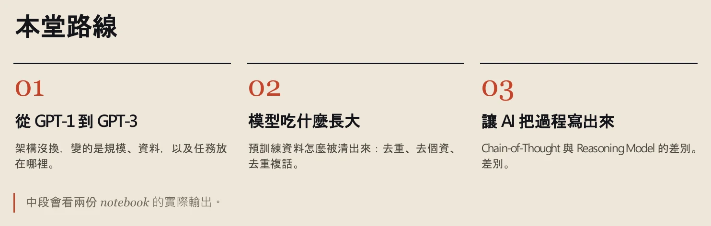
查看完整第 2 頁 ↗
開始之前，先花幾分鐘看看這一週 AI 圈又冒出了什麼。
核對這一段的逐字稿 · 06:08–08:33 · 2 個小標
以下取自本週整理逐字稿：語音辨識後補上標點、改正明顯誤辨的專有名詞，無法確定處以〔〕標記；不是人工逐秒校稿。時間連到 YouTube 直播，正文的銜接與練習不包含在此。
00:06:08｜開場：上週的歌與十月 Meetup
00:06:08 ↗
可以、可以，可以齁？好，那我開始囉。好，就是上個禮拜的歌，其實是 GPT〔原辨識：GBT〕去寫 prompt〔原辨識：Pump〕，然後給 Lyria 去唱歌。但是我就覺得那個聲音聽起來怪怪的〔原辨識：Gay Gay 的〕，你知道嗎？然後這一次我就換 Gemini〔原辨識：Gem9〕去寫〔原辨識：唱〕prompt，然後我就覺得聽起來快睡著了。所以我決定下禮拜可能換一點比較振奮一點的歌。
00:06:40 ↗
然後 10 月中的 Meetup 已經開出來了，如果有人有興趣的話可以一起來參加。我覺得如果有空都可以來參加，因為可以看看不同的人他們是怎麼運用 AI 的。這個對於如果你有初始知識的，你要再更精進〔原辨識：緊接〕，我覺得都蠻有幫助的。就哪怕你一個晚上只聽到一個你覺得非常值得學習的點，我也覺得這個就都還不錯。
00:07:16｜今天的三段路
00:07:16 ↗
今天我們要來說的是 GPT 的模型，就是怎麼從 GPT-1 到 GPT-3。上禮拜做的 Transformer 結構是 GPT-2 的簡化版，所以我們今天要再往前移一點，然後再推進到說，現在的推理模型他們是怎麼運作的，那這個我覺得還蠻重要的。所以今天主要會有三塊：第一塊是從 GPT-1 到 GPT-3；那第二塊就是我們可以來嘗試抽絲剝繭，看一下說模型他們原本訓練的資料會長怎樣，那怎麼樣做資料的清洗。
00:08:01 ↗
因為很多檔案其實它們都會有一些很煩的這種結構，這些結構其實對大語言模型〔原辨識：大於模型〕來說都是一種障礙，所以這種障礙就必須要先把它排除，然後再回到模型的訓練。第三個就會來談一下，AI 一個很重要的叫 Chain of Thought，然後是從 Chain of Thought 延伸到 Reasoning Model，這個過程當中是怎麼樣去進行的。
只輸出「決策」的模型，和聽得見意念的晶片，說明了什麼？
講者打算每週用一頁投影片分享當週「非常誇張」的 AI 進展。這週有三則。
第一則是 xAI 團隊的 Grok Bot Galaxy。三個人想回答一個問題：三個人、三天，能不能用 Grok Bot 建立一間公司、做出一套產品？他們一天直播八小時。講者覺得值得看的，不是結果，而是他們遇到問題時怎麼解決。團隊說，現在幾乎 95% 的工作都能交給 Grok Bot 自動完成。講者順帶提到一則推文：有位工程師抱怨，自己一天的工作幾乎只剩下跟 AI 聊天、一直按 Enter。
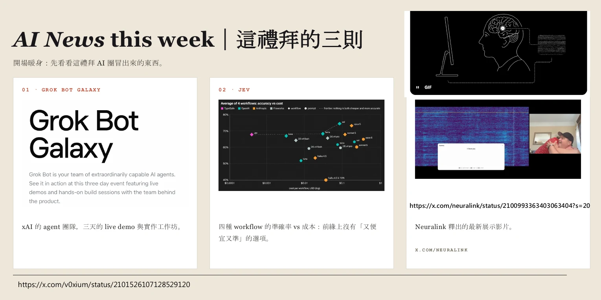
查看完整第 3 頁 ↗
第二則是一個叫 JEV 的新模型。講者先用上週的流程對照：一般語言模型是「文字 → 數字 → Transformer 計算 → 數字 → 文字」。JEV 的產出不是文字，而是決策——例如給它一張帳單，它不寫一段說明，只給「繳費、不繳費、刪除」這類最基本的選項，以及判斷出來的機率。要做的事很少，所以速度很快、費用很低。這幾天網路上出現各種用法，例如有人把它接上自己的交易系統做量化交易（用程式依規則自動下單）。講者提醒，正因為速度太快，一個晚上虧掉的錢，可能比以前還多——決策變快，錯誤也會一起變快。
第三則是 Neuralink 的展示。一位逐漸失去說話能力的漸凍症患者，腦中植入的晶片在語言區產生訊號；團隊用他生病前的聲音克隆出語音。影片最後，他用意念對太太說出「我愛你」，畫面上響起的是他自己的聲音。講者說，這已經不是科幻小說的情節，而是正在發生的事。
JEV 的對照，剛好把我們帶回上週的流程。先快速複習一次，再用一個經典案例檢查自己懂了沒。
核對這一段的逐字稿 · 08:33–12:37 · 1 個小標
以下取自本週整理逐字稿：語音辨識後補上標點、改正明顯誤辨的專有名詞，無法確定處以〔〕標記；不是人工逐秒校稿。時間連到 YouTube 直播，正文的銜接與練習不包含在此。
00:08:33｜這週的三則 AI 新聞
00:08:33 ↗
有鑑於〔原辨識：有介於〕現在 AI 的〔此句後半未辨識〕……所以我就想說，我每個禮拜稍微用一頁很簡單的投影片，來分享一下這禮拜我認為非常誇張的 AI 的進展，還有相關的新聞。第一個就是，上禮拜其實有三天半夜直播的節目，這是 Grok 團隊，因為他們最近發表一個 Grok Bot〔原辨識：GrookBar〕，就是 AI agent 的……
00:09:05 ↗
xAI 的團隊有三個人，他們想要回答一個問題：三個人三天，能不能用 Grok Bot〔原辨識：GroupBot〕去建立一間公司，然後做出一套產品？所以他們一天開了八個小時的直播。那這個我覺得蠻值得去學習的，就是如果你想再更進階一點的話，因為他們很多就是在面臨到問題的時候，他們是如何去解決問題的。那他們現在幾乎所有的工作用 Grok Bot〔原辨識：Growbar〕，就可以 95% 幾乎全自動化的去完成。
00:09:46 ↗
然後我今天才看到一個 X 上面的推文，也是蠻好笑的，就是有一間公司的工程師在抱怨說，他的工作 95% 都是跟 AI 在聊天，然後他的功能就是一直按 Enter，然後他一天的工作好像就結束了，他覺得這個工作太廢了。對，所以如果 AI 能夠說人話，它可能會覺得人類蠻煩的：幫你們省力也不好〔後半句辨識不清〕。所以我覺得這蠻有趣的。
00:10:15 ↗
那第二個是，有個叫 JEV〔原辨識：JAB；依投影片標題〕的新的模型。上一段我們提過 Transformer 的結構，就是一段文字進去轉成 ID，所以它是一串數字進去 Transformer 結構，算出來之後產生另外一串數字，再轉成文字。所以你可以簡化成：文字進入計算，產生文字，那這是目前 AI 的運作。
00:10:40 ↗
而 JEV〔原辨識：Java〕這個模型，它產出的不是文字，它產出的是決策，就是它把 AI 那種講廢話的過程完全省略掉。舉很簡單的例子來說，假設你今天給 AI 一張帳單，然後它可能會給你的決策是：可能繳費、不繳費，或是刪除。
00:11:08 ↗
它只給你最基本的選項，然後只給你簡單的機率，來告訴使用者說，它看到這張帳單所判斷出來的機率是多少。所以它需要做的事情其實很少，這就反映出它的速度會非常非常的快，它產生的費用非常非常的低。所以這幾天網路上又有各式各樣的運用產生，就是有人把它接上自己的交易系統，然後就發現說，我一個晚上虧的錢比原本多太多了，對，因為它速度實在太快了。
00:11:45 ↗
所以那第三個呢，就是 Neuralink，這個蠻感人的，可以去看一下。這個人他是一個漸凍人，他逐漸不會說話。Neuralink 其實就是馬斯克的其中一間公司，在這個人的腦袋裡面植入〔原辨識：紙錄〕一個晶片，所以這個晶片在語言區那邊……
00:12:08 ↗
……然後就會產生一段訊號，它其實就是一個 spectrum。這個團隊他們就利用這個人在生病之前的聲音，嘗試去克隆他的聲音。所以影片的最後，就是這個人對他老婆用意念說出「我愛你」，然後畫面上就真的有一個他的聲音發出「我愛你」。這個就是有點科幻小說的情節，已經是真實在發生的一個現象。
模型數不出 Strawberry 有幾個 r，是因為它很笨嗎？
上週的流程可以壓成五步：文字先切成 Token，所以不一定一個字就是一個 Token；Token 轉成向量；每個位置透過 Attention 參照上下文——這一步和之後要談的 Prompt Engineering 關係很深；同樣的運算疊很多層；最後其實只是在預測下一個 Token。
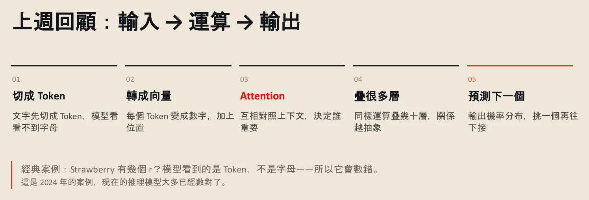
查看完整第 4 頁 ↗
如果這條脈絡接得起來，就可以回頭看 2024 年一個經典案例：有人問模型「Strawberry 有幾個 r？」，模型答錯了。直覺反應可能是：模型怎麼這麼笨，連這個都數不出來？
但換成上週的角度想：模型看到的是 Token，不是字母。Strawberry 可能只是一兩個 Token，模型從來沒有「看見」裡面的 r，數錯其實很合理。模型公司後來做了修正，現在問任何主流模型 Strawberry 有幾個 r、有沒有 b，大多都能答好。講者也說，這只是一個很小的問題；重點是，懂了流程，就能解釋錯誤從哪裡來。
停一下 · 整理者練習模型曾經數錯字母，代表它讀不懂英文嗎？
不代表。它處理的單位是 Token，而不是逐個字母；問題出在輸入被切分的方式，和「懂不懂這個字的意思」是兩回事。這也是上週強調「數中文字，和數 Token，回答的是不同問題」的原因。
有了這個基礎，就可以正式進入第一段：GPT 這三個字母，本身就藏著它的訓練方式。
核對這一段的逐字稿 · 12:37–14:20 · 1 個小標
以下取自本週整理逐字稿：語音辨識後補上標點、改正明顯誤辨的專有名詞，無法確定處以〔〕標記；不是人工逐秒校稿。時間連到 YouTube 直播，正文的銜接與練習不包含在此。
00:12:37｜上週回顧與 Strawberry 案例
00:12:37 ↗
所以快速的 recap：上禮拜說的文字，我們會先切成 token，所以不見得每一個字就是一個 token，這個大家都可以理解。再來 token 會轉成向量，轉成向量之後，每一個字其實都會有 attention，這個 attention 蠻重要的，〔銜接處辨識不完整〕
00:13:08 ↗
……我們之後會討論的叫 Prompt Engineering 的技術。最後就是運算之後疊很多層〔原辨識：點很多層〕，它其實只是預測下一個 Token。所以如果你這個脈絡都可以理解之後，我們來看一下，2024 年其實有一個經典的案例，這個案例就是使用者去問說：Strawberry 到底有幾個 R？
00:13:38 ↗
你可能會覺得模型很笨，連 Strawberry 都算不出來。這時候如果你懂這個概念，就會想說：拜託，模型看到的是 Token，所以 Strawberry 可能就只有一個 Token 而已，它看到的並不是字母，所以它會數錯完全是很合理的一件事。但是模型公司當時發生這種事之後，他們有做一些方式去修正這個東西。
00:14:08 ↗
〔你現在去找〕任何一個 AI 的模型，問它們 Strawberry 有幾個 R，或 Strawberry 有幾個 B，所有的模型大致上都可以回答得很好，但這個就是一個非常 minor 的問題。
第一段 · 14:20–43:08
架構沒換，變的是規模、資料，以及任務放在哪裡
同一種 Transformer，讀更多資料、長得更大之後，我們交代任務的方式也跟著改變。
GPT 的 P，為什麼是先「預」訓練？
GPT 是三個字的縮寫：Generative，能生成內容；Pre-trained，先經過大規模預訓練；Transformer，就是上週談的架構。講者特別提醒 Pre-train 這個詞：之後會一直出現「預訓練（Pre-training）」與「後訓練（Post-training）」這一組。2018 年的第一篇論文其實沒有寫「GPT-1」，不過直接搜尋「2018 GPT-1 論文」就找得到。
GPT-1 分兩個階段。第一階段是預訓練：收集大量沒有標籤的文字——當時用了七千多本未出版的書——讓模型練習預測下一個 Token。講者用機器學習的分類說明：沒有標籤的訓練叫非監督式學習，有標籤的叫監督式學習，後者就像給模型一個目標，「監督」它朝那個方向前進。
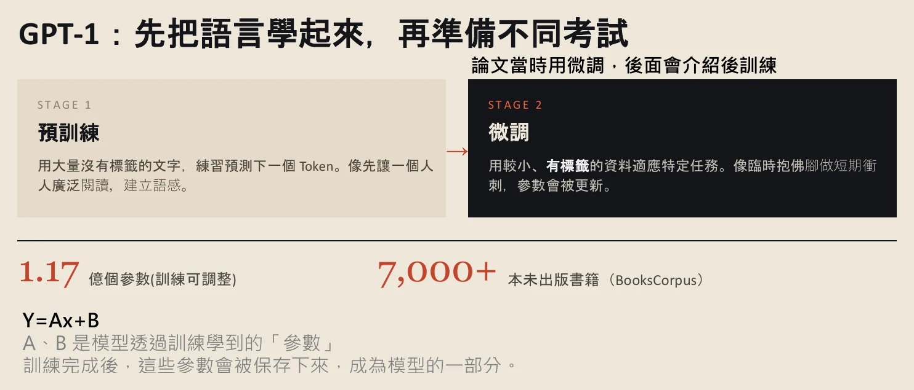
查看完整第 7 頁 ↗
第二階段是微調（Fine-tuning）：預訓練得到的那組參數先保存下來，再拿較小、有標籤的資料去適應不同的任務——這一題解數學、下一題寫程式、再下一題回答教育相關的問答。投影片形容得很貼切：預訓練像廣泛閱讀、建立語感；微調像考前臨時抱佛腳。講者也補充，GPT-1 當年用的是微調；到了今天的新世代模型，重點已經換成後訓練，第三段會再回來。
那「參數」是什麼？GPT-1 大約有 1.17 億個。講者用 Y = AX + B 簡化：X 是輸入，Y 是輸出，A 和 B 就是參數——訓練時被調整，訓練完被保存，成為模型的一部分。把文字當成 X 餵進去，控制輸出的不是兩個數字，而是 1.17 億個。
整理者補充今天常把 GPT 這類「用文字本身預測下一個 Token」的訓練稱為自監督學習：資料不用人工標註，答案就是原文的下一段。這和課堂說的「沒有標籤」指的是同一件事，只是分類名稱不同。
微調需要「有標籤」的資料。標籤到底長什麼樣子？課堂接著打開一個真實的資料集。
核對這一段的逐字稿 · 14:20–18:20 · 1 個小標
以下取自本週整理逐字稿：語音辨識後補上標點、改正明顯誤辨的專有名詞，無法確定處以〔〕標記；不是人工逐秒校稿。時間連到 YouTube 直播，正文的銜接與練習不包含在此。
00:14:20｜GPT 三個字與 GPT-1 的兩階段
00:14:20 ↗
第一個部分就是從 GPT-1 到 GPT-3。GPT 這三個字，第一個是 Generative，
00:14:38 ↗
〔P 是〕Pretrain，是經過預訓練。這個 Pretrain 後面會蠻常用，就是我們總共會有 Pretrain 跟 Post-training：Pretrain 就是預訓練，Post-training 就是後訓練。T 就是 Transformer，Transformer 就是訓練文字的架構，所以這是 GPT 三個字的起源。當然他們在 2018 年發表論文的時候，
00:15:05 ↗
這部分是沒有直接寫 GPT 這麼明確，但你可以直接 Google 說 2018 年 GPT-1 的論文，其實你也可以找到這篇文章。GPT-1 它一開始是先有一個步驟，是經過預訓練。這個預訓練其實就是收集大量沒有標籤的文字，
00:15:30 ↗
這些文字基本上就是你可以想像的任何的文字，當時是用接近 7,000 多本沒有出版的書，然後瘋狂去掃描那些書，再把這些書當作預訓練〔原辨識：必訓練〕的材料。在機器學習裡面，如果是沒有標籤的這種訓練方式，叫非監督式的學習；如果是有標籤的，就是監督式的學習，就代表我們給一個標籤，有點像是監督整個模型朝著那個標籤前進。
00:16:08 ↗
但 GPT 它在預訓練的時候，是沒有使用任何標籤的文字，它只是把七千多本書〔原辨識：期限多本書〕丟給預訓練。在 stage 2 的時候，就開始將模型進行微調。這個 stage 1 已經訓練完的參數可以先被固定下來，〔銜接處辨識不完整〕
00:16:38 ↗
……〔用來應對〕不同的適應場景。所以進入到微調的時候，資料就會有標籤，不同的標籤可能對應到不同的任務：有可能這一題是要去解數學的，下一題是要去解一個程式的運算，再下一題可能是要解一個跟教育相關的問題，或是 Q&A，
00:17:08 ↗
這個資料就必須要有標籤。但是後來，GPT-1 是用微調，到了現在的 GPT-4、5、6 再之後，主要是用後訓練。當時的 GPT-1，它的參數大概是 1.17 億個〔原辨識：1.171 個〕。這個參數我們可以把它簡化，
00:17:38 ↗
Y 等於 AX 加 B，所以 X 是你的 input，你的 input 經過兩個參數的計算〔原辨識：解算〕之後會有一個 output。所以在 Y 等於 AX 加 B 這個非常簡化的函數裡面，A、B 其實就是參數。所以你可以把它想成是說，
00:18:08 ↗
文字當作一個 input，餵〔原辨識：Way〕進去模型裡面，這個模型總共有 1.17 億個參數來去控制最後整體的輸出，所以這是一個比較簡化的說法。
微調需要的「標籤」，實際上長什麼樣子？
最容易想像的是圖片：一張貓咪的照片，標上「貓」。標籤可以寫在資料夾名稱，也可以寫在檔名。投影片把它比喻成字卡：正面是題目，翻到背面才印著標準答案，微調要的就是這種一問一答的成對資料。
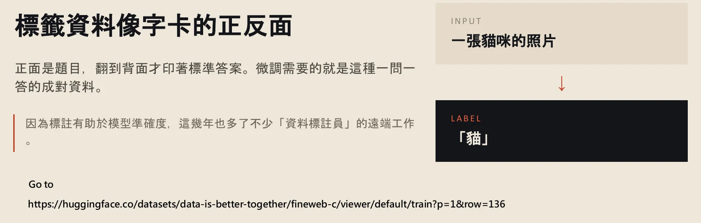
查看完整第 8 頁 ↗
文字的標籤呢？講者打開 Hugging Face 上的一個資料集。每一筆有資料 ID、文字本身，以及標籤；從標籤大概猜得出這個資料集在評估內容和「教育」的相關程度，用 None、Minimal 等等級表示。隨手點開一筆，是在討論中國電影票房的文章——和教育的相關性就比較低。
同一段文字也可以有很多標籤：如果內容是電影，它可能額外被標上「電影」或「動漫」。資料標註員會讀文字，再依需要的標籤逐筆標註，常見做法是存成 JSON 這類格式，資料格式之後的課還會再談。
如果要你替一批地震相關的文字貼標籤，你會設計哪幾種標籤？兩個標註員看法不同時，要以誰為準？這些決定，最後都會變成模型學到的「標準答案」。
標註要花人力。下一代的 GPT-2，換了一種挑選資料的方式。
核對這一段的逐字稿 · 18:20–20:31 · 1 個小標
以下取自本週整理逐字稿：語音辨識後補上標點、改正明顯誤辨的專有名詞，無法確定處以〔〕標記；不是人工逐秒校稿。時間連到 YouTube 直播，正文的銜接與練習不包含在此。
00:18:20｜標籤資料與 Hugging Face 資料集
00:18:20 ↗
標籤其實就有點像是這樣：假設一張貓咪的照片，你可以把它標成貓，
00:18:38 ↗
你可以標在你的資料夾名稱，或是標在檔案的名稱。如果是文字會長成怎樣？可以很快的稍微看一下，這邊這個是 Hugging Face 上的某一個資料集，這資料集就是非常亂的資料集，所以它會有資料集的 ID，這個是文字本身，
00:19:08 ↗
〔這邊是〕標籤，所以大概可以猜到說，這個資料集可能是跟教育這個內容是有關的，所以這邊的相關性，它會用 None、Minimal 或 High 來表示。所以來隨便看一下其中一個文字，這個是在討論中國電影票房，然後討論不同的電影，
00:19:35 ↗
這跟教育的相關性比較低。後面當然會有一些知識化的格式，所以這個有點像是一個文字的標籤的形式。所以資料的標註員有時候就會看裡面的文字，針對需要的標籤來做標註。一段文字它可能會有非常多不同的標籤：假設這個文字是電影，所以它可能額外的標籤就是電影或是動漫之類的，
00:20:08 ↗
所以這種是文字的標籤。所以標籤相對就是還蠻簡單的，它可能是用 JSON 檔的格式來做儲存，資料格式我們之後會再去提到。
換了一批資料，模型的樣子也會跟著變嗎？
GPT-2 把模型和資料一起放大：參數從 1.17 億增加到 15 億；資料換成 800 萬份網路文件，大約 40GB 的文字。
這批文字的來源很有意思。它們來自美國論壇 Reddit 上被分享、而且被按過讚的外部連結。講者的解讀是：一則貼文或回覆被很多人按讚，代表有人覺得它值得看。比起書本那種敘述一段故事的資料，這裡多了一層人的判斷——模型因此有機會知道哪些資料相對好、哪些相對不好。
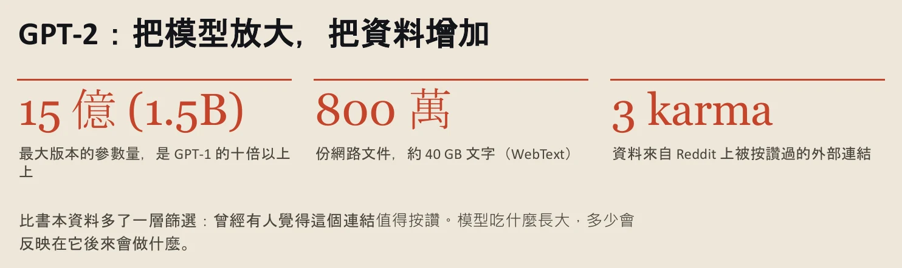
查看完整第 9 頁 ↗
講者接著點出一個之後會反覆出現的觀念：模型吃什麼長大，多少會反映在它後來會做什麼。他預告稍後會用 Ollama 下載一個中國的千問模型來比較，讓大家親眼看到原始資料如何影響輸出；這個比較在第三段的地端示範中出現。
把參數和文字量一起放大之後，研究者發現了一個意外的能力：不用任何例子，模型也能做某些任務。
核對這一段的逐字稿 · 20:31–22:23 · 1 個小標
以下取自本週整理逐字稿：語音辨識後補上標點、改正明顯誤辨的專有名詞，無法確定處以〔〕標記；不是人工逐秒校稿。時間連到 YouTube 直播，正文的銜接與練習不包含在此。
00:20:31｜GPT-2：放大模型與 Reddit 上的資料
00:20:31 ↗
到了 GPT-2 之後，〔銜接處辨識不完整〕所以在這個模型上，可以把它的模型給放大：剛剛是 1.17 億個參數，到了 GPT-2 之後就上升到了 15 億個參數，網路的資料就到了 800 萬個，大約有 40GB 的文字。有一些文字是來自於 Reddit 上，Reddit 其實就是一個美國的論壇，所以在 Reddit 上就有點類似……
00:21:08 ↗
……所以這邊的文字內容可能非常好：如果有一個回覆也被按了非常多個讚，就代表說這一篇文就是要配這個回覆的。所以到了 GPT-2 之後，就又比 GPT-1 多了一層資料。原本書本的資料，它其實就跟故事一樣，它在敘述一段過程，
00:21:38 ↗
所以它會有人的介入，模型可以知道哪一個資料相對是好的，哪一個資料相對是不好的。但這種就會取決於說，模型吃什麼長大，多少會反應在它後來會做什麼樣的事情上。這個我們待會可以用 Ollama 去下載一個大陸的千問〔原辨識：籤文〕，
00:22:08 ↗
我們來用這個模型來去比較一下，你可以很清楚看到說，他們原始資料會影響到他們輸出的結果，這是非常明顯的。
沒給任何例子，模型怎麼知道要做什麼？
放大之後出現的能力叫 Zero-shot（零樣本）：只給任務，不給示範，模型也能照做。這聽起來像無中生有，其實不是。講者的解釋是：你給出的文字，喚醒了模型在訓練資料中曾經學過的條件結構。一個問題若常在訓練資料裡出現，模型就知道「問題後面要接答案」。
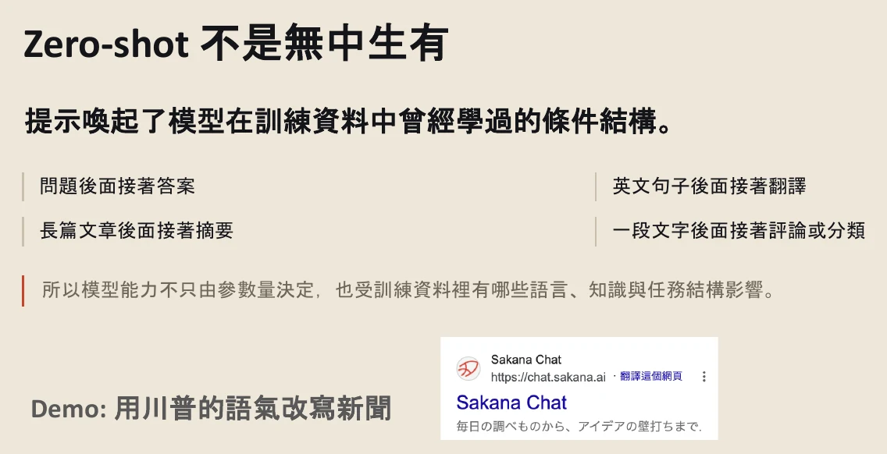
查看完整第 10 頁 ↗
示範很直接：請模型用川普的語氣改寫一則台積電的新聞。川普是美國總統，他的發言大量散播在網路上，幾乎一定在訓練資料裡。講者把思考程度（Effort）調到最低，因為這個任務不需要思考，最低檔跑得最快。
他也順帶說明訂閱方案的差別：沒訂閱只能選「思考／不思考」；較便宜的方案可選到 High；他自己的方案可以開到 Pro，一個問題可以跑十分鐘以上。這些是課堂當下的方案，之後可能改變。
改寫出來的，就是模型原本資料結構裡的「川普風格」。講者接著提醒：如果要進一步問「川普的風格是哪一種？」，最好叫它不要上網搜尋。一旦搜尋，它會去找川普的貼文再整理出一種風格，那就不再是模型本身學到的結構了。
停一下 · 整理者練習為什麼 Zero-shot 對「川普語氣」有效，對你們研究室的內部報告格式卻可能失靈？
因為 Zero-shot 靠的是訓練資料裡本來就有的模式。川普的發言在網路上大量出現；你們研究室的內部格式，模型很可能從沒見過，這時就需要給它範例——也就是接下來的 One-shot 與 Few-shot。
示範做到一半，畫面剛好跳出一個大家都見過的選擇題。
核對這一段的逐字稿 · 22:23–26:35 · 1 個小標
以下取自本週整理逐字稿：語音辨識後補上標點、改正明顯誤辨的專有名詞，無法確定處以〔〕標記；不是人工逐秒校稿。時間連到 YouTube 直播，正文的銜接與練習不包含在此。
00:22:23｜Zero-shot 與川普語氣示範
00:22:23 ↗
所以到了 GPT-2 之後，他們把整個參數量還有文字量放大，放大的結果他們發現說，會有一個叫 Zero-shot 的東西。
00:22:38 ↗
這個文字代表說，你給出一段文字，你有辦法可以喚醒模型在訓練資料中曾經學過的條件結構。例如說你給一個模型一個問題，這個問題可能曾經出現在它以前訓練的資料裡面，所以它就知道說，這個問題後面就是要接答案。
00:23:08 ↗
所以這邊可以快速給大家一個 demo，就是我們用川普的語氣來改寫一段新聞。川普的語氣絕對在它的訓練資料裡面〔同句重複辨識，略〕。
00:23:38 ↗
川普是一個美國總統，所以他有大量文字被散播在整個網路世界當中。我們改寫的新聞就可以用今天台積電的新聞來表示，所以我就可以跟它說：請用川普的語氣幫我改寫下面這一段新聞。
00:24:08 ↗
這個 Effort 要調非常低。我看一下，我新聞有放在這邊。額外補充一下，如果各位有訂閱的話，就是訂閱 GPT，就可以去選思考的程度，這個思考程度就會呼應到……
00:24:38 ↗
如果你是 for free 的，你都沒有訂閱的話——我還特地創了一個沒有訂閱的帳號——就會長成這樣，只有分有思考跟沒思考。如果你是訂閱大概 600 多塊的那一個，你的思考應該只到 High；因為我是訂閱 3,000 塊的，所以思考可以到 Pro。
00:25:08 ↗
如果要丟一個東西去〔思考〕的話，基本上可以跑 10 分鐘以上，所以那個差別會非常大。所以如果你現在還在用免費版的，可以考慮稍微升級一下。但我們今天就只是要去 demo 川普的語氣，所以我們用最低的就好了，最低的它基本上就不需要思考，所以它就可以跑很快。
00:25:48 ↗
所以這個就是它原本資料結構裡面有的川普的這種風格。那當然可以進一步問它說：請問川普的風格是哪一種風格？這時候可能要叫它不要去網路搜尋了，因為我們需要的是它原本這個模型裡面有的結構。一旦它網路搜尋之後，它就會再去網路上找類似川普的貼文，然後總結收斂出一種風格給我們。
按下「你喜歡哪一個回答」，你其實在做什麼？
示範時，ChatGPT 剛好同時給出 A、B 兩個回答，問使用者比較喜歡哪一個。講者說，這種回饋是後訓練的一種方式：你選了之後，這筆偏好資料會回到 OpenAI 的後台，讓它知道人類偏好哪一種回答。你等於間接幫模型公司訓練模型。
他隨手選了一個，也坦白說有時候兩個很接近、很難選——現在大部分都做得不錯。這個小插曲第三段會再回來：它就是 RLHF（人類回饋強化學習）裡「人類偏好」的來源。
你在 A／B 之間選一個 → 偏好資料回到模型公司 → 用於後訓練，讓模型更接近人類喜歡的回答
講者再把 Zero-shot 收一次尾：它只是喚醒模型在訓練資料中學過的條件結構而已。接著他推薦沒有付費訂閱的人試試日本公司 Sakana AI 的對話服務：用 Google 帳號就能登入，他覺得表現可以和 Claude 的 Opus 相比，甚至更好；如果需求是和 AI 對話、釐清想法，這是一個不用付錢的選擇。他提到台灣很少人用，但他一直在追蹤這間公司。
Zero-shot 是只給任務。到了 GPT-3，另一種用法變得很重要：直接在問題裡給例子。
核對這一段的逐字稿 · 26:35–29:08 · 1 個小標
以下取自本週整理逐字稿：語音辨識後補上標點、改正明顯誤辨的專有名詞，無法確定處以〔〕標記；不是人工逐秒校稿。時間連到 YouTube 直播，正文的銜接與練習不包含在此。
00:26:35｜A/B 回饋與 Sakana AI
00:26:35 ↗
對，今天非常的剛好遇到這種 feedback。這種 feedback 是後訓練〔原辨識：後續鏈〕裡面的其中一種方式：在模型端，他們會用 A 跟 B，然後輸出兩種不同〔的回答〕，我相信大家都有遇過，它就會問你說你喜歡哪一個。一旦你選了之後，這個資料集就會回到 OpenAI GPT 的後台，
00:27:08 ↗
〔讓它知道人類〕偏好哪一種回答，所以你等於間接的幫 OpenAI 在訓練他們的模型。這個就是大家看一看就好了。好，選一個，選這個好了。其實有時候兩個會選不太出來，因為有時候還蠻接近的，現在大部分都做得蠻好的。
00:27:38 ↗
〔所以 Zero-shot〕就是你其實只是喚醒模型在訓練資料中曾經學過的這種條件結構而已。如果你是沒有付費的，我會〔原辨識：我們還〕建議你可以用 Sakana 的 AI，這是日本的一間公司，然後它的作者就是曾經是〔此處辨識不完整〕……
00:28:08 ↗
……就是一個日本人。這個 Sakana 的 AI，我覺得它做得非常好，它前陣子〔原辨識：三年前；待核〕更新過它最新的版本。我覺得你其實只用 Google 登入就好了，原則上可以跟 Opus 類似，就是 Claude〔原辨識：Cloud〕的 Opus，而且它現在好像試用〔原辨識：Trade〕是免費的，甚至我覺得它的表現比 Claude 的 Opus 還要好。所以如果你的需求是有點像對話，
00:28:38 ↗
然後去釐清說，你現在想要跟 AI 討論東西的話，你可以用 Sakana。台灣很少很少人在用，除非你有用的人你才會知道。但因為這間公司我一直有在追蹤，我其實前陣子有用過他們的模型，那個時候也是比 OpenAI 的表現還要好。所以如果你真的不想付錢，你就可以用 Sakana 的 AI。
不改模型，只給幾個例子，為什麼就能改變回答？
從 GPT-2 到 GPT-3，訓練過程沒有太大改變，只是文字量和參數量再拉大——參數來到 1,750 億。除了 Zero-shot，GPT-3 讓兩種用法變得明顯：One-shot 先給一組輸入與輸出的示範；Few-shot 給少數幾組，讓模型自己抓規律。講者說，這兩個對他來說「超級重要」，到現在都還在瘋狂使用。
課堂的例子是股市。給模型兩組示範：「全面加徵 25% 進口鋼鐵關稅」→ 大盤下跌；「科技大廠宣布在美擴建新廠，釋出數千個就業機會」→ 大盤上漲。然後問第三題：「與主要貿易夥伴達成歷史性降稅協議」→ ？
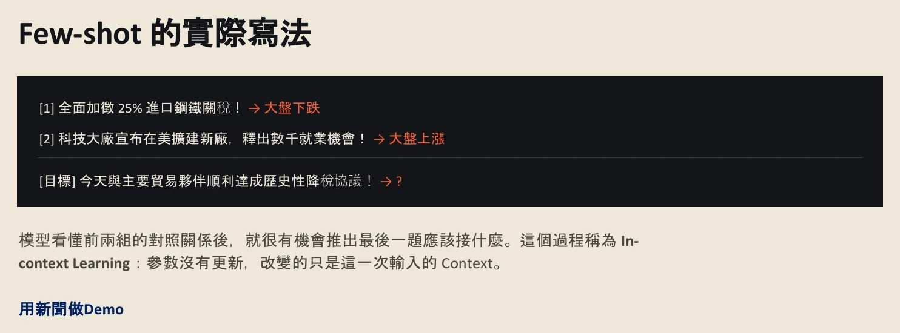
查看完整第 12 頁 ↗
模型會嘗試從第一、二個例子歸納經驗，推論第三個應該長什麼樣。它從你的文字裡，學到了你想要的東西。
關鍵在於：我們沒有改變模型的任何參數，也沒有微調。模型訓練完之後，只靠幾個簡單的例子，就改變了它產出的行為。這個過程叫 In-context Learning（上下文學習）：改變的只是這一次輸入的 Context。
整理者補充例子裡的漲跌只是示範 Few-shot 的格式，不是投資判斷。模型可能照著例子的方向回答「上漲」，但真實市場還受許多例子之外的因素影響。
說完原理，講者開了一個新對話，實際示範一次 Few-shot 怎麼改寫文章。
核對這一段的逐字稿 · 29:08–31:38 · 1 個小標
以下取自本週整理逐字稿：語音辨識後補上標點、改正明顯誤辨的專有名詞，無法確定處以〔〕標記；不是人工逐秒校稿。時間連到 YouTube 直播，正文的銜接與練習不包含在此。
00:29:08｜GPT-3：One-shot 與 Few-shot
00:29:08 ↗
從 GPT-2 到 GPT-3，它基本上不太去改變〔架構〕，就是不太改變它整個訓練的過程，那它把文字量給拉大，一樣把參數量給拉大，所以在這邊它到了 1,750 億個參數〔原辨識：1750 一個參數〕，
00:29:38 ↗
它就會變成了一個 zero-shot 的結構，就是你一直給任務，你去喚醒原本的資料結構。到了 GPT-3，就會產生 one-shot 跟 few-shot〔原辨識：fuel shot〕。那 one-shot 跟 few-shot 這個對我來說我覺得超級重要，就是我到現在還是瘋狂的在用 one-shot 跟 few-shot 的這種過程，等一下可以展示給大家看。
00:30:08 ↗
〔Few-shot 就是〕你只給模型幾個例子。假設川普說全面加徵 25% 的進口鋼鐵關稅，這時候美國的大盤可能會下跌；第二個例子，可能科技大廠宣布在美擴建新廠，釋出千個就業機會，這時候的大盤可能就會上漲。所以你的目標就是去問說……
00:30:38 ↗
……所以它會問你：如果〔今天〕達成歷史降稅協議的話，那這是漲還跌？所以 few-shot 的意思就是說，模型的結構會嘗試去推理你第一個例子跟第二個例子，總結這兩個的經驗，來告訴你第三個應該要長怎樣。所以它其實從你的文字當中，它就可以去學習你想要的東西是什麼。
00:31:08 ↗
我們沒有改變整個模型的任何的參數，我們也沒有微調，我們都沒有。這個模型訓練完之後，我們只用簡單的例子，就可以去改變模型產出的行為。所以這邊也給大家一個很簡單的 demo，開一個新的對話。
想讓 AI 模仿一種寫法，範例要怎麼給？
講者準備了兩篇風格很不一樣的新聞。第一篇是剛才示範過的台積電熊本廠新聞，出自 Yahoo：篇幅短，需要比較誇張的話術吸引讀者。第二篇來自《報導者》：敘述性強，會把整個推理過程交代清楚。
他把兩篇文字貼上，請模型「按照報導者新聞的風格，改寫這則新聞」，思考程度一樣開最低。結果可以看到，改寫後出現了很多大標題——回頭看《報導者》的原文，確實有這種大標題。模型從你給的例子抓出文字風格，再試著模仿、改寫。
One-shot 與 Few-shot 的用法很多變。講者舉了兩個情境：喜歡某位作者的文字，就把文字擷取下來貼給模型，請它「模仿這位大神的文字，幫我改寫我的文字」；或者給它一張時間訊號圖，告訴它「這是地震」，再問另一張是不是地震。總結只有一句：一定要給範例。
範例怎麼給也有講究。如果用的是聊天模式，盡量給純文字。講者的理由是：給 PDF 的話，模型得先用工具把檔案拆開才讀得到文字；多一個步驟，就多一個出錯的機會，而語言模型本身又是機率式的，很難保證拆檔與讀取時不出錯。所以他的習慣是：要文字就貼文字，要圖片就貼圖片，不要貼 PDF、Word 這類需要解析的檔案；真要給檔案，txt 或 md 這種純文字檔對 AI 最友善。
挑一段你覺得寫得很好的文字，貼給 AI 當範例，再附上你自己的一段草稿請它改寫。比較結果時，先問：它模仿到了哪些特徵？又自己多加了什麼？
Few-shot 很好用，但範例放在對話裡。對話關掉之後，會發生什麼事？
核對這一段的逐字稿 · 31:38–36:38 · 1 個小標
以下取自本週整理逐字稿：語音辨識後補上標點、改正明顯誤辨的專有名詞，無法確定處以〔〕標記；不是人工逐秒校稿。時間連到 YouTube 直播，正文的銜接與練習不包含在此。
00:31:38｜報導者風格改寫示範與實用提醒
00:31:38 ↗
我拿了兩篇新聞，一樣第一篇是剛才示範過的，就是台積電熊本廠〔原辨識：熊本場〕；第二個新聞我拿報導者的新聞。這兩種的新聞很不一樣，因為 Yahoo 的這種新聞就是比較短一點，然後它需要有比較誇張的話術來吸引群眾；
00:32:05 ↗
〔報導者的〕敘述性會比較強，然後嘗試去把整個推理鏈說明得很清楚。所以今天拿這兩個來去做修正，先把文字貼上來。所以這時候你就可以說：請幫我按照報導者新聞的風格去修改新聞。我要先確定我的標籤是不是對的，這個是報導者，那就報導者就好。一樣開最低，好。
00:33:38 ↗
所以可以看到，確實報導者會有蠻多這種大標題。如果我們回去看報導者的文章的話，就是會有這種大標題。所以訓練好的模型常常會有這種大標題〔此句待核〕。
00:34:08 ↗
然後它會嘗試著基於你給的例子——第一個就是報導者的文章，你給它這個文字的風格——然後嘗試讓它去模仿、去改寫。這怎麼那麼長……所以 one-shot 跟 few-shot 就是非常非常的有用。
00:34:38 ↗
〔如果你喜歡某個人的文字，〕你就可以把他的文字擷取出來，貼到 GPT，跟它說：請你模仿這位大神的文字，幫我改寫我的文字。所以這個就是一個 one-shot 的運用的做法。或是你給它一張圖片，假設我有一張時間訊號圖，你跟它說這是地震，
00:35:08 ↗
〔再問它〕這個是地震還是不是地震。所以 one-shot 跟 few-shot 的用法其實蠻多變的，但總結而言，就是你一定要給範例。範例最好最好就是直接給它：如果你用的是 chat 的 mode 的話，你盡量給它很純的文字，原因是因為它是語言模型。
00:35:38 ↗
這個文字如果你給 PDF 檔的話，它需要做什麼事？它需要去用一個工具，來去把 PDF 檔拆開，才能讀到裡面的文字。所以一旦多了一個步驟之後，你也知道語言模型它是一個機率式〔原辨識：紀律師〕的，所以你很難保證它在讀文字的過程當中，或它在拆的過程當中〔不出錯〕。
00:36:08 ↗
所以我自己很常用的是，我如果要給 one-shot 或 few-shot，我就直接給它最 pure 的東西：你要文字的就貼文字給它，你要圖片的就直接貼圖片給它，不要去貼一些很奇奇怪怪的檔案，像 PDF 檔或 Word 檔〔原辨識：我的檔〕這種它都需要去解析。但相對的，你可以去貼一個 txt 檔或是 md 檔，因為這種檔案對 AI 來講都是最 friendly 的。
微調和 In-context Learning，差在哪裡？
回到 GPT-1 的微調。微調是真的改變模型內部的參數：預訓練先得到一組參數，進入微調時再輕微調整，讓它符合我們準備好的任務，例如問答、算數學、寫程式。
In-context Learning 則完全沒有改變任何參數。你只是給一個範例，請它盡量模仿你給的風格——講者特別說，這叫模仿，不叫抄襲。所以一旦把對話關掉，那段 Context 就消失了；下次要做同樣的新聞改寫，就得重新貼一次範例。如果不想這麼麻煩，就需要另外把風格萃取出來（講者稱為「蒸餾」），這個之後的課才會說明。
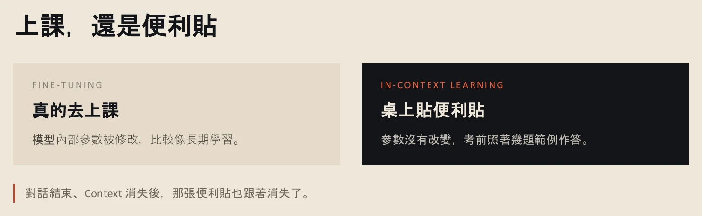
查看完整第 13 頁 ↗
把 GPT-1、2、3 排在一起看：參數量逐步放大，資料從書籍、到網路文字、再到更大更多元的語料。真正改變的，是任務被放在哪裡。GPT-1 把任務寫進微調資料；GPT-2 從大量文字中認出任務形式；GPT-3 直接把指令與範例放進 Context。也因此，你的指令可以改寫整個輸出行為——這就是之後 Prompt Engineering 那麼重要的原因：你的話術，會整個引導模型的產出。
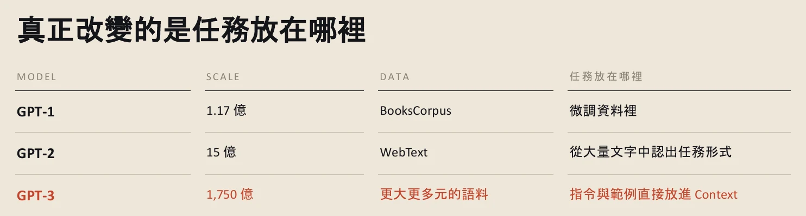
查看完整第 14 頁 ↗
停一下 · 整理者練習昨天在對話裡給 AI 的範例，今天開新對話還有效嗎？
通常沒有。範例只存在於那一次的 Context，模型參數沒有因此改變。要讓它「記得」，得重新提供，或使用平台另外提供的記憶、專案說明等功能——那些功能本質上也是把資料再放回 Context。
從 1、2 到 3，好像模型越大，能力就越好。這個直覺，後來被寫成了一條曲線。
核對這一段的逐字稿 · 36:38–38:38 · 1 個小標
以下取自本週整理逐字稿：語音辨識後補上標點、改正明顯誤辨的專有名詞，無法確定處以〔〕標記；不是人工逐秒校稿。時間連到 YouTube 直播，正文的銜接與練習不包含在此。
00:36:38｜微調與 In-context Learning
00:36:38 ↗
所以在 GPT-1 的時候〔原辨識：在 GPT3 就是 GPT1 的時候〕，我們有一個 fine-tune 的過程。fine-tune 的過程是真的有改變模型內部的參數結構：我們的預訓練會先固定好一組參數，接下來進入到微調的時候，我們會輕微的去調整這個模型的參數，
00:37:05 ↗
這會去符合我們給它準備好的課題，例如是 QA、算數學、Coding。所以它真的會去改變整個的參數。但到了 In-context learning 的過程當中，完全沒有改變任何的參數。你只是給它一個範例，叫模仿，不能叫抄襲，給它一個範例，請它盡量去模仿你給出來的風格。所以一旦你把對話關掉的時候，那個 context 就消失了。
00:37:39 ↗
所以你下次要重新再喚起〔原辨識：換起〕——假設新聞改寫的這種過程——你就必須要重新貼給它一個範例。如果你不想這麼麻煩，你就必須要去蒸餾〔原辨識：增六〕、萃取它的風格，這個我們之後才會跟各位說明，現在基本上不太需要。所以從 GPT-1、2、3，你可以看到它的參數量逐步被放大，
00:38:08 ↗
所以這個〔資料〕原本從書籍，到了網路的文字，再放大到更大的資料庫。所以它有一些指令其實是可以改寫整個輸出的行為，所以這才會回到之後的 prompt engineering，就是為什麼這麼重要，因為你的話術整個會引導 GPT 的產出。所以從 1、2、3，
模型越大越好，這條規律可以一直走下去嗎？
2020 年，研究者畫出一條叫 Scaling Law（規模定律）的曲線：參數量、資料量與計算量一起放大，模型在訓練時的誤差（loss）就會穩定下降。講者說，從那時起，各家公司都進入了軍備競賽。
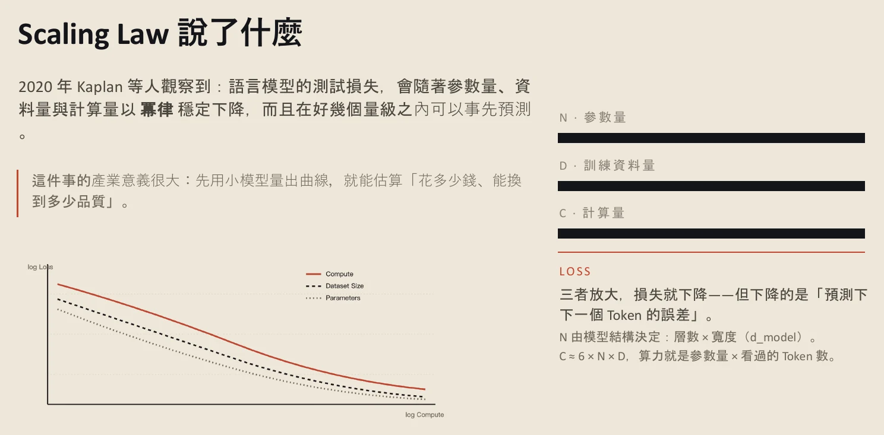
查看完整第 15 頁 ↗
但算力很貴，放大不能只看參數。後來的研究（投影片標示為 2022 年的 Chinchilla）發現：很多大模型其實「吃太少」——參數拚命放大，資料卻沒跟上。一連串實驗得出的經驗法則是：每 1 個參數，大約配 20 個訓練 Token。在同樣的計算預算下，吃得夠飽的 70B 模型，可以勝過大它四倍的 280B 模型。
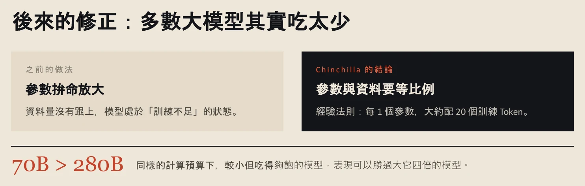
查看完整第 16 頁 ↗
那 Scaling Law 是對的嗎？講者說這有點見仁見智：有人仍然相信它，也有人認為不一定要照著它，也能做出很強的模型。不過對大公司而言，大部分模型仍然遵守 Scaling Law，繼續衝高參數量。投影片把界線寫得更清楚：它是經驗規律，不是物理定律；高品質文字資料有限；想再進步一點，成本要翻好幾倍。所以這幾年的重心，逐漸從「把預訓練做得更大」，移到後訓練與「回答時多花一點計算」——也就是第三段的推理模型。
既然參數量這麼重要，今天看到一個模型的大小，要看哪個數字？答案是兩個。
核對這一段的逐字稿 · 38:38–40:46 · 1 個小標
以下取自本週整理逐字稿：語音辨識後補上標點、改正明顯誤辨的專有名詞，無法確定處以〔〕標記；不是人工逐秒校稿。時間連到 YouTube 直播，正文的銜接與練習不包含在此。
00:38:38｜Scaling Law 與 Chinchilla
00:38:38 ↗
好像我的模型越來越大之後，我的能力越來越好。所以在 2020 年的時候，就有一個曲線叫 scaling law〔原辨識：scaling loss〕，就發現說：我的算力越大的時候，我的模型在訓練過程當中的 loss 越低，相對就會反應出這個模型訓練的成果是越好的。所以從 2020 年開始，所有的公司都導入了軍備競賽。
00:39:08 ↗
所以當時 Google 有一篇文章〔此句數字辨識不清：原辨識「每一個參數大約有 100 個模型」〕，所以你會有一個更大的模型，他們始終相信〔更大的模型〕能夠換到更好的這種品質的產出。但是因為這個算力實在蠻貴的，在這邊就是會有兩個會影響整個模型〔的因素〕……
00:39:38 ↗
所以〔每一個參數〕你必須要配 20 個訓練的 token，因為不然的話，你的資料太少，但是你堆疊了很多的參數，可能會過度的去擬合，就是在 machine learning〔原辨識：machinery〕裡面我們俗稱叫 overfitting，你會過度的去匹配你給的這種輸入的資料。所以當時有做一系列的實驗，得到了大概是 1 比 20，
00:40:08 ↗
所以這是因為很難去測每一個參數對每一個訓練〔的影響〕。最近就有人討論到，那 scaling law 是對的嗎？就是有一部分人還相信它是對的，有一部分人覺得好像我們不太需要 scaling law 也可以做出類似的很強的這種模型。所以這有點見仁見智，但對大公司而言，他們的模型大部分都還是遵守 Scaling Law 再去衝〔原辨識：充〕他們的整個參數量。
看模型大小，為什麼要看兩個參數數字？
現在每個模型通常會公布一個「總參數量」。講者舉例：DeepSeek R1 系列約 1.6 兆；GPT 新世代沒有公布，有人估計在 5 兆到 10 兆之間。但只看總參數不夠，因為模型有兩種不同的結構。
Dense（稠密）模型：每個 Token 都跑完整個模型，總參數就是實際動用的算力。MoE（Mixture of Experts，混合專家）：可以想像成一個委員會。你送出一段文字，模型先經過一次分派的計算，決定這段文字交給委員會裡的哪幾位專家；這和上週提到的 Top-K「只保留前幾名」是類似的概念。
講者的比喻很生活化：像去廟裡拜拜。求身體健康，不確定要拜哪一位神明；求學業進步，大概就找文昌帝君。MoE 每次回覆不需要全體出動，所以「激活參數」會比「總參數」少很多——總參數像知識庫的大小，激活參數才決定這次要花多少算力。
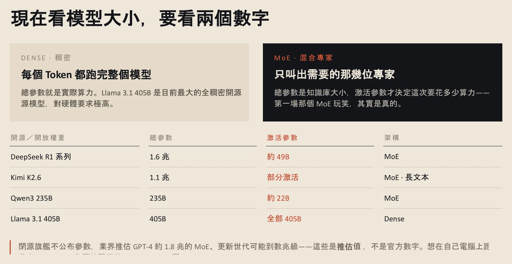
查看完整第 18 頁 ↗
講完 In-context Learning，講者再強調一次：和 AI 溝通的文字很重要，因為你可以引導它怎麼產出你要的結果。投影片上的四件事——任務、範例、限制、預期輸出——這次不用背，之後談 Prompt Engineering 會再說一遍。他也提醒，過去的模型需要寫得很細的提示；現在的模型，往往不需要那麼詳細也能做到類似的事。
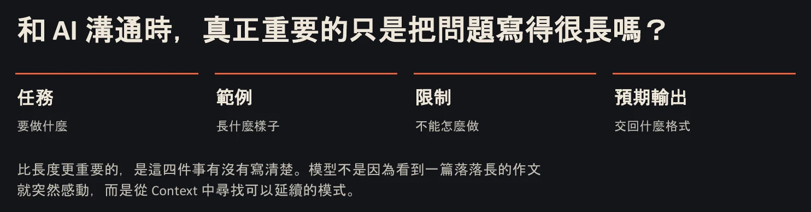
查看完整第 19 頁 ↗
第一段說的是模型怎麼長大。可是它讀的那些文字，是直接從網路上抓來的嗎？
核對這一段的逐字稿 · 40:46–43:08 · 1 個小標
以下取自本週整理逐字稿：語音辨識後補上標點、改正明顯誤辨的專有名詞，無法確定處以〔〕標記；不是人工逐秒校稿。時間連到 YouTube 直播，正文的銜接與練習不包含在此。
00:40:46｜Dense 與 MoE：看兩個參數數字
00:40:46 ↗
所以模型看完了之後，現在如果你看到每一個不同的模型，它基本上會給你一個總參數量。像 DeepSeek〔原辨識：DeepSig〕R1 它是 1.6 兆，那 GPT-5 到 6 沒有公布總參數量，但有人估計大概是 5 兆到 10 兆之間的參數量。
00:41:08 ↗
這邊就會產生出兩種不同的結構。現在大多數的結構是用 MoE，就是混合專家的模型，你可以把它想像成它是一個委員會。所以當你發出一段文字給語言模型的時候，它會經過一個〔路由〕的計算〔原辨識：出錢的計算〕，來去決定說你這段文字，要發配給委員會的哪幾位專家。所以這個就回到我們上禮拜講的，
00:41:38 ↗
類似 top-K 的概念，你要選擇每一次的回覆，你要保留幾位專家的意見。Dense 模型就代表它只有一位專家〔此比喻待核：Dense 是每次動用全部參數〕。所以我每次都把它想像成很像拜拜：我們去廟裡面說我要祈求身體健康，但你不知道身體健康到底是要給哪位神明；那你如果要祈求學業進步，那學業進步可能是給文昌帝君〔原辨識：文章地區〕，
00:42:08 ↗
所以 MoE 是混合專家，它每一次的回覆，它不需要調用全部的人來一起回答，所以它的激活參數量跟總參數量是會有一定的差距。但 Dense 的架構，就是它每一次都一定要調用全部。當學過了 in-context〔原辨識：inconsistency〕之後，
00:42:38 ↗
和 AI 溝通的文字就會很重要，因為你基本上可以引導 AI 要怎麼樣產出你要的結果。所以這個範例不需要去記，因為到了 prompt engineering 會再跟各位說一遍。prompt engineering 其實是因為像前一代的產品〔需要〕，但到了現在，其實並不需要這麼 detail 的 prompt，可以做到類似的事情。
第二段 · 43:08–45:48
網路上的文字，要先清過才能拿來訓練
模型讀的是整理過的純文字。清理時的每個決定，都在決定它會學到什麼。
網路上的文字，為什麼不能直接拿來訓練？
預訓練的資料裡有大量 HTML，也就是網頁的原始格式。直接餵進去不行：要篩選語言、去掉重複、把個資遮起來、刪掉贅字。投影片把它整理成五步。
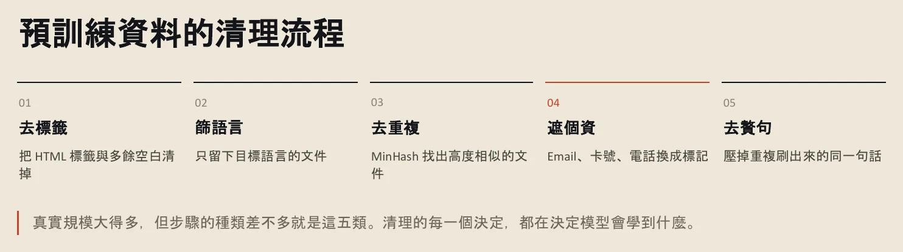
查看完整第 21 頁 ↗
講者打開上週的課程筆記網頁當例子。畫面上看起來結構清楚，可是看 HTML 原始碼，文字被一堆標籤語法包住。對機器學習來說，這些都是不需要的文字，第一步就要去掉，只留下純文字，因為模型讀的就是純文字。
投影片的例子更小：<p>今天 <b>天氣</b> 很好！</p>，真正要留下的只有「今天天氣很好！」。
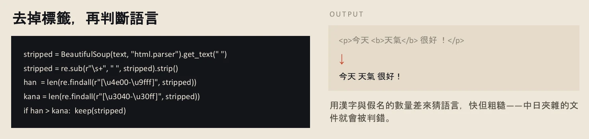
查看完整第 22 頁 ↗
個資也要遮住，但不一定遮得乾淨。講者舉了一個案例：有人在對話中用「越獄」手法一步步引導，讓 GPT 說出 Microsoft 的產品授權碼——就是安裝正版軟體時那串很複雜的碼。模型說得出來，代表訓練資料裡有，也代表當時沒有清乾淨。
整理者補充投影片第 23 頁示範了用 MinHash 找出高度相似的文件（去重複），以及用規則把 Email、卡號、手機號碼換成標記（遮個資），並提醒這只是最基本的一層。影片中這段快速帶過，可回看第 23 頁。
如果要用自己的研究紀錄或觀測報告訓練模型，哪些欄位算個資？哪些重複的內容會讓模型過度記住同一句話？先列出來，再決定怎麼清理。
資料清理講者說之後還會細談。接下來進入今天最重要的第三段：讓模型把思考的過程寫出來。
核對這一段的逐字稿 · 43:08–45:48 · 1 個小標
以下取自本週整理逐字稿：語音辨識後補上標點、改正明顯誤辨的專有名詞，無法確定處以〔〕標記；不是人工逐秒校稿。時間連到 YouTube 直播，正文的銜接與練習不包含在此。
00:43:08｜預訓練資料的清理
00:43:08 ↗
預訓練〔原辨識：預訓列〕的資料裡面會有很多的 HTML，HTML 就是我們現在的網頁的這種格式。所以可能你需要去篩選語言，你可能要把重複的東西去掉，你需要把個資〔原辨識：各自〕給遮起來，你需要去除掉這一些贅字〔原辨識：罪志〕。所以如果我們開啟一個簡單的 HTML 的格式來看看，
00:43:38 ↗
這個網頁是長這樣的，基本上這是課堂一的整理的資料。所以你可以知道這個裡面有非常多的結構，但如果你去看 HTML 的話，你就會覺得它其實被一堆 HTML 的語法給包裹住。
00:44:08 ↗
所以我們對學習來說，對 machine learning 來說，這些都是不需要的文字。所以在第一步的資料清除的過程當中，其實我們就需要把這些東西都給去除掉，只保留我們需要的這些純文字〔原辨識：存文字〕的部分，因為模型〔原辨識：原模型〕它基本上就是讀這些純文字。
00:44:38 ↗
所以它原則上會有幾個過程，但這是簡化的啦，所以這邊就很快的帶過。就有點像我的文字其實就是「今天天氣很好」，但你如果在 HTML，你可能就會包裹住 HTML 的這些格式，那這些格式就需要被去除掉。那當然就是你在訓練過程中，你需要去遮住個資〔原辨識：掉個資〕，
00:45:08 ↗
就是個資〔原辨識：各自〕不見得會被遮住。之前有一個案例是，有人在跟 GPT 對話裡面，他使用越獄的手法，慢慢的去引導出 GPT 說出 Microsoft 的授權碼。就有點像我們安裝 Microsoft，如果是正版，它會給你一個非常複雜的碼。所以你就可以知道說，當時在訓練過程當中，它一定是沒有清乾淨。
00:45:38 ↗
所以這個就是我們在整個訓練的文字的資料庫裡面〔要處理的事〕，所以這個我們到〔後面〕那邊我們會再跟各位說。
第三段 · 45:48–01:14:20
Chain-of-Thought 與推理模型
先把「一步一步想」當成一種問法，再看它怎麼被訓練進模型，最後用地端模型實際觀察它的內心戲。
多寫幾個中間步驟，模型就變聰明了嗎？
先看一題：商品原價 1,000 元，先打八折，再加上折後價格 5% 的稅金，最後是多少？直接回答是 840 元——答案對了，但我們不知道它怎麼算的。展開步驟則是：
1,000 × 0.8 = 800 → 800 × 0.05 = 40 → 800 + 40 = 840
一步一步算、最後才得到答案，這個精神就是 Chain-of-Thought（思維鏈，簡稱 CoT）。沒有 CoT，模型直接給答案；加了 CoT，問題和答案之間多了幾個推理步驟。
講者特別強調：Chain-of-Thought 不是新的模型架構。它只是在 prompt 裡讓模型多寫幾個中間步驟。模型仍然在預測下一個 Token，只是多了一些可以用來計算、檢查與延續的 Token。
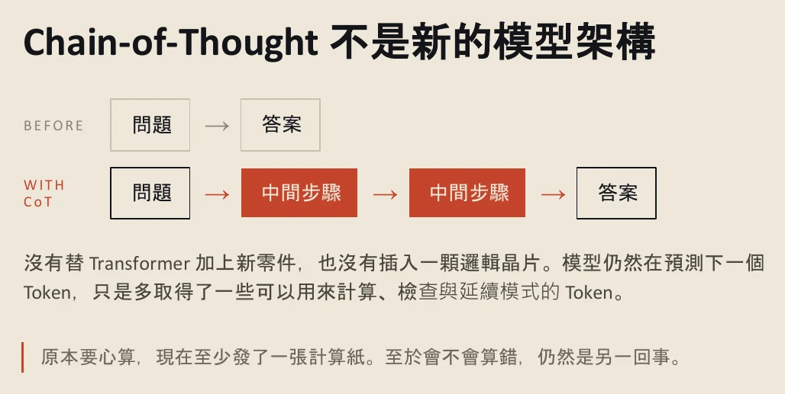
查看完整第 26 頁 ↗
這又呼應了前面的主題：你怎麼跟 AI 對話非常重要，因為你可以引導它怎麼思考。講者說，他始終相信不同的人用 AI 會有完全不同的結果；很多人覺得「你會用 AI、我也會用 AI，有什麼了不起」，但實際上差很多。
當時還流行一個「都市傳說」：問題打完之後，再多加一句 Let's think step by step。講者記得大約是 GPT-4 前後的事。當時的 AI 沒那麼聰明，還出現各種奇招，像是「你做得好我給你一千塊」「做不好我會被指導老師罵」；很多人驗證後發現真的有用，還有文章把這些說法整理成表格。
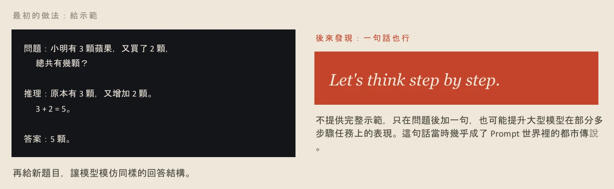
查看完整第 27 頁 ↗
但這些很快就過時了。Chain-of-Thought 不是萬用咒語；說穿了，就是用語言去引導 AI 而已。投影片給了一個簡單的判斷標準：這一題，你自己會不會想拿紙筆算一下？計算、規劃、比較多個條件、多步驟判斷值得展開；知識查詢、翻譯、格式轉換只需要一句答案，硬要長篇推理只會更慢、更長。
整理者補充投影片引用的兩篇研究：Wei 等人（2022）提出以示範引導的 Chain-of-Thought；Kojima 等人（2022）發現只加「Let's think step by step」的 Zero-shot CoT。所以論文出現的時間比課堂回憶的 GPT-4 更早一些。
這麼簡單的方法，效果又這麼明顯。後來的模型公司乾脆把它直接訓練進模型裡。
核對這一段的逐字稿 · 45:48–48:38 · 1 個小標
以下取自本週整理逐字稿：語音辨識後補上標點、改正明顯誤辨的專有名詞，無法確定處以〔〕標記；不是人工逐秒校稿。時間連到 YouTube 直播，正文的銜接與練習不包含在此。
00:45:48｜Chain-of-Thought：多寫出中間步驟
00:45:48 ↗
所以第三個就是很重要的思考的過程。如果這邊有一個簡單的問題，可能商品原價 1,000 元，打 8 折，
00:46:08 ↗
〔再加上稅金，〕就是一步一步的去計算，最後再得到答案，這個精神其實就是 Chain of Thought〔原辨識：train of soul〕。如果不用 Chain of Thought，其實模型就是直接回答。所以 Chain of Thought 不是一個模型新的架構，它其實只是在 prompt 裡面讓模型多了幾個中間的步驟。所以如果不加 Chain of Thought 的話，
00:46:35 ↗
單純就是問題，最後會返回答案；但加了 Chain-of-Thought 之後，就會有問題，中間會多了幾個步驟，這個步驟就是推理的步驟，最後就會有答案。所以從這邊就可以再次呼應前面，就是你跟 AI 怎樣對話非常的重要，因為你完全可以引導 AI 怎樣去思考，那怎麼樣去給出你要的東西。
00:47:06 ↗
所以我始終相信，不同人用 AI 絕對會有完全不同的結果。雖然很多人說「你用 AI，我也會用 AI，這有什麼了不起的」，我跟你講，差超多的，真的會差非常多。所以在當時就會有一個都市傳說：〔問題〕打完之後你就要再多打一句，就是 Let's think step by step。這個我記得是 GPT 大概 4 左右的時候的都市傳說。
00:47:38 ↗
都市傳說很多，因為那個時候的 AI 還沒有那麼聰明，你可能還需要 PUA 它，你可能還需要說「你做得好的話我給你一千塊」，或是「你做不好的話我會被我指導老師罵」，有沒有？這種很奇怪的都是當時的都市傳說。很多人去驗證之後就發現說，這個很有用耶。當時有好幾篇文章就把這些東西整理成 table。
00:48:08 ↗
但那個很快就過時了。Chain of Thought〔原辨識：Channel soul〕不是一個萬用的咒語，但其實主要的過程，就是你要嘗試用語言去引導 AI 而已，它其實很簡單。但是這麼簡單的東西大家覺得很厲害，所以後來的模型原則上就會把……
把「一步一步想」訓練進模型，要靠什麼？
把 Chain-of-Thought 的核心概念訓練進模型，訓練出來的就叫 Reasoning Model（推理模型）。它的訓練資料裡多了推理的過程，讓模型學會相對應的回答方式。講者說，這是在大家發現「引導步驟會讓 AI 能力大爆發」之後才出現的。
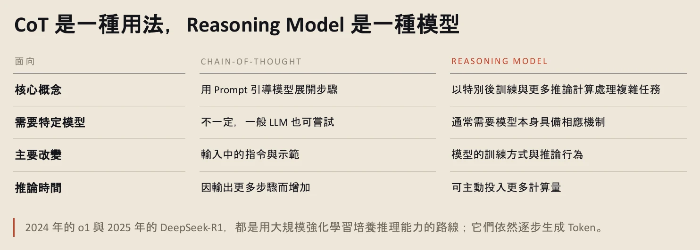
查看完整第 30 頁 ↗
從那之後，訓練進入後訓練的階段。GPT-1 的第二階段只是微調——餵一些問答、一些特定任務，稍微調整參數。後訓練則有三種主要方法：
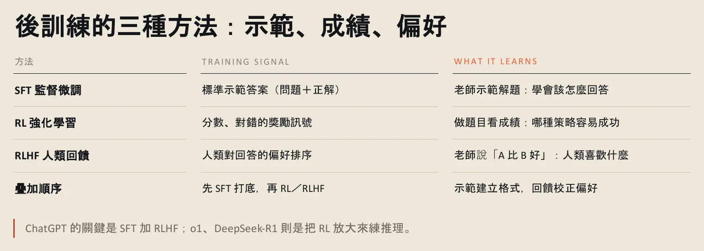
查看完整第 32 頁 ↗
SFT（監督式微調）：有問題、有標準答案，像老師示範怎麼解題——就像剛才那題折扣計算，一步一步示範怎麼得到答案。RL（強化學習）：有獎勵機制，做題目、自己對答案，答對加一分、答錯扣一分，讓 AI 自主地去解題。RLHF（人類回饋強化學習）：由人決定獎勵訊號，也就是人類對回答的偏好——正是前面示範時那個 A／B 選擇：你說 A 比 B 好，資料回到 OpenAI，它就知道人類偏好哪一種。
這三種可以混著用，不一定哪一種比較好。講者說，模型公司也還在研究、還在收斂應該用什麼順序執行。
停一下 · 整理者練習「後訓練」和「微調」是同一件事嗎？
不完全是。投影片第 31 頁的說法是：後訓練是一個階段，指預訓練之後整段讓模型聽得懂指令、守規範、會推理的流程；微調是一種手段，指更新權重的具體技術，是後訓練的主要工具，也能單獨拿來做客製化。
有了推理模型之後，模型的能力發生了什麼變化？講者拿出一張「智商表」。
核對這一段的逐字稿 · 48:38–51:08 · 1 個小標
以下取自本週整理逐字稿：語音辨識後補上標點、改正明顯誤辨的專有名詞，無法確定處以〔〕標記；不是人工逐秒校稿。時間連到 YouTube 直播，正文的銜接與練習不包含在此。
00:48:38｜Reasoning Model 與後訓練三種方法
00:48:38 ↗
……這個核心概念訓練進模型裡面，所以訓練出來的 model，我們就會叫它 reasoning 的 model。所以 reasoning 的 model，它其實資料集裡面會多了幾個推理的過程，原因是因為它需要讓模型去學會相對應的回答的機制。
00:49:08 ↗
所以這個項目是在 Chain of Thought 之後才出現的，因為大家發現說這個引導的步驟，整個會讓 AI 的能力爆噴。從那次之後，就會進入到後訓練的階段。原本 GPT-1 只是微調，就是餵〔原辨識：微〕一些 QA、餵一些特別任務，讓模型去微調它的參數，但到了 Chain of Thought 之後，
00:49:38 ↗
〔後訓練的第一種〕就是 SFT，監督式的微調。監督式微調它就有問題，然後有標準答案，所以這有點像是老師示範怎麼解題，就像我們剛剛那個數學題一樣，老師示範說我們要怎麼樣一步一步的得到答案。那第二個就是強化學習，強化學習就有獎勵機制，就是做題目，然後看答案，自己對答案：你答對的話你就加一分，你答錯的話就扣一分。
00:50:08 ↗
所以這個可以讓 AI 自主的去進行。所以有了獎勵機制之後，大家整個 AI 就會開始去解題。〔第三種，〕這個對或錯是由人去決定獎勵的訊號，剛才選的就是 RLHF，就是人類對回答偏好的程度。就像我們剛有一個 A/B，〔你〕就會說 A 比 B 好，或者是你喜歡哪一個，
00:50:38 ↗
我們剛選的，〔會〕回到 OpenAI 的資料庫裡面，它就會知道說人類偏好 A 還是 B。所以後訓練基本上有三種方法，就是這三種，但這三種可以混著去使用，不見得用哪一種比較好。現在整個模型公司也還在做研究，還在收斂說應該用什麼樣的順序來去執行。
模型學會「思考」之後，變得多聰明？
一開始的 GPT-4 沒有思考；到了 o1，模型開始學會思考。講者把思考形容成語言模型的「內心戲」：它先自言自語，說完了，再告訴你答案可能是什麼。
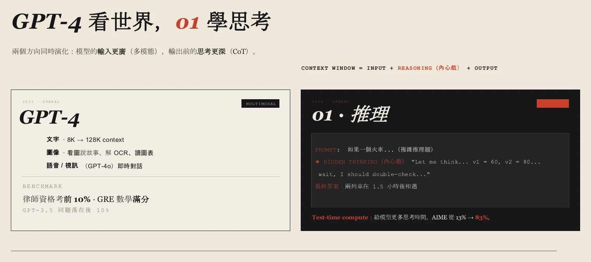
查看完整第 33 頁 ↗
會思考之後，就有了 AI 的「IQ 表」。講者說，2024 年的模型分數普遍偏低；o1 出現後，整體開始往右移；從今年六、七月到九月，右邊「整個大爆發」，現在許多模型的分數都在 110、120、130 以上。他的結論很直接：模型原則上比我們聰明，如果用得不好，真的要想想是我們哪裡用錯了。
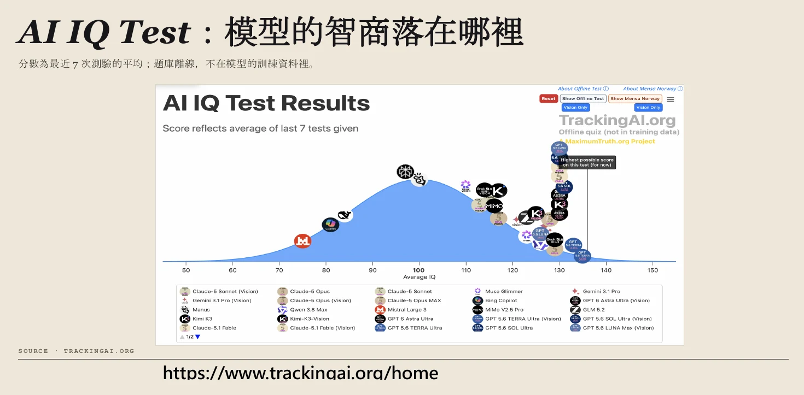
查看完整第 34 頁 ↗
有聰明的表，自然就有「笨蛋的表」。
核對這一段的逐字稿 · 51:08–52:38 · 1 個小標
以下取自本週整理逐字稿：語音辨識後補上標點、改正明顯誤辨的專有名詞，無法確定處以〔〕標記；不是人工逐秒校稿。時間連到 YouTube 直播，正文的銜接與練習不包含在此。
00:51:08｜GPT-4 到 o1，以及 AI IQ 表
00:51:08 ↗
所以在這個順序的時候，一開始 GPT-4 是沒有思考的，到了 o1 的時候就開始學會了思考。思考其實就是語言模型的內心戲〔原辨識：內心系〕，就是它會自己去自言自語，自言自語完了之後，它就會告訴你說答案可能是什麼。所以會思考之後，就會有這個 IQ 的 table。
00:51:38 ↗
這就是我們今天要來做的一個比較精彩的〔部分〕。尤其從今年度開始，這邊會有一個 IQ 的 history〔原辨識：black history〕，可以看到 2024 年，模型原則上都處於一個弱智的狀態，但有了 o1，你可以看 o1 出來之後，整個模型的能力開始有點慢慢的往右邊移動。
00:52:08 ↗
你可以看從 7 月過後，6 月、7 月、8 月、9 月，你發現說右邊整個大爆噴，現在的模型的智商幾乎都是 120 以上，110、120、130，原則上每個模型都比我們聰明。所以如果 AI 用得沒有很好，真的要思考是我們哪個地方用錯了，因為它們這麼聰明，
分數這麼高，為什麼用起來還是會覺得笨？
Stupid Meter 是社群做的即時看板，想回答一個問題：你用 AI，真的有想像中厲害嗎？前一張表上有模型分數高達 130、140，實際用起來卻常讓人覺得「怎麼會這麼笨」。
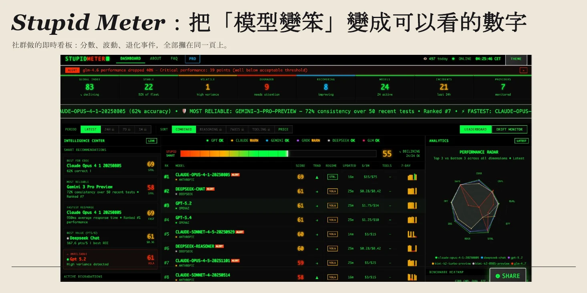
查看完整第 35 頁 ↗
講者提出幾個可能的原因。第一，有點像掛羊頭賣狗肉：你選的是一個很聰明的模型，但你怎麼確定用到的就是它？使用者太多、機器不夠時，供應商有可能改給你一個比較省算力的版本。第二，回答被截斷：模型本來可以回一千字，卻只允許它回一百字——一千字和一百字，哪個比較能把理論解釋清楚？
這對拿雲端模型做產品的人是個大問題：模型一下聰明、一下笨，很難固定出一個完整的輸出格式。講者也分享自己的觀察：有些新模型剛推出時超級聰明，過一陣子就開始變笨，他認為這和全世界算力不足有關；訂閱的額度也越來越快撞到上限。
與其猜雲端模型在想什麼，不如打開一個自己電腦上的模型，直接看它的內心戲。
核對這一段的逐字稿 · 52:38–55:06 · 1 個小標
以下取自本週整理逐字稿：語音辨識後補上標點、改正明顯誤辨的專有名詞，無法確定處以〔〕標記；不是人工逐秒校稿。時間連到 YouTube 直播，正文的銜接與練習不包含在此。
00:52:38｜Stupid Meter：模型為什麼時好時壞
00:52:38 ↗
〔用得〕不好其實都是使用者的錯。所以有聰明的表，自然而然就會有笨蛋的表。笨蛋的表在說什麼呢？原則上是在說，你使用 AI 有沒有你想像中的這麼厲害。你前面看有一些智商高達 130 幾、140，但你用起來你就會覺得說：不是啊，它怎麼會這麼笨？
00:53:08 ↗
〔這背後有幾個〕原因，其中一個原因就是有點像掛羊頭賣狗肉：你雖然選的是一個非常聰明的模型，但你怎麼知道你用的是一個非常聰明的模型？模型的供應商有可能給你一個比較笨的，原因是因為背後的算力不足：我現在有太多的使用者要使用這個模型了，但我現在沒有多餘的機器來去承載這個模型，
00:53:38 ↗
〔所以給你〕比較笨的，它有可能就不需要這麼多的算力。第二個原因，也有可能是在模型回覆的過程當中，我把它截斷了。原本這個模型很厲害〔原辨識：很搞味〕，它可以回 1,000 字，但你今天只允許模型回 100 個字。1,000 字要解釋一個理論比較清楚，還是 100 個字要解釋一個理論比較清楚？當然是你有越長的輸出〔越清楚〕。
00:54:05 ↗
所以，有時候模型變笨，可能是它輸出被截斷，當然還有很多很多其他的原因。所以這個也是，如果使用雲端模型來做你的產品的時候，會遇到一個很大的問題，就是你的模型一下聰明一下笨，一下聰明一下笨，你沒有辦法固定一個很完整的格式。
00:54:32 ↗
就像前陣子 GPT-6 的〔名稱辨識不清：Ostrata〕出來之後，超級聰明，但是一個禮拜過後，它就開始變笨〔原辨識：編本〕了。然後 Opus 也是，Opus 5 出來之後很聰明，但現在 Opus 原則上就有點智障，就真的跟白痴〔原辨識：百詞〕一樣。所以這都是因為算力不足的關係。所以現在使用訂閱，其實你會發現額度越來越少，很快其實就撞到上限，這也是呼應全世界的算力還是非常的不夠。
看得到模型的內心戲，就知道它想對了嗎？
講者用 Ollama 在自己的 Mac 上打開地端模型；從後面的對話看，這次用的是第 06 節預告過的千問（Qwen）。這個版本針對 Mac 最佳化（MLX），跑起來比較快。先把思考程度調高，然後問一個很台灣的問題：「如果我在台北飲料都喝半糖，請問我到台南之後，飲料要選什麼樣的甜度？」這算是一種都市傳說：南部喝得比較甜。
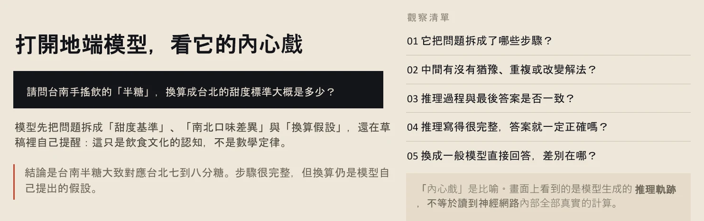
查看完整第 36 頁 ↗
講者先提醒一件怪事：模型思考時用中文還是英文，完全說不準。前一次測試它全程用中文自言自語，之前問的時候卻轉成英文。
接著內心戲開始失控。它想到「台南比較熱，人比較有禮貌」——完全岔題；再來是「台南人比較慢活、嘴甜，所以多喝半糖」；後來甚至跑去想義大利要吃什麼。思維鏈停不下來，講者只好把它截斷。思考鏈這麼長，正是因為它根本不知道答案，只能一直掰出各式各樣的說法。
講者的解讀是：這說明它的訓練資料裡根本沒有這種知識，所以它不知道要用什麼邏輯推理。推理模型的幻覺，也可能就是在推理的過程中產生的。如果原本的訓練資料裡沒有類似的東西，硬要它推出答案，它就會像剛才那樣，連自己在做什麼都不知道。
停一下 · 整理者練習如果模型最後給了一個「看起來合理」的答案，你要怎麼判斷它是知道，還是在掰？
先看推理的起點是不是事實：它說「南部比較甜」是從哪裡來的？再看步驟之間有沒有跳躍或岔題，最後找一個不靠模型的來源核對——例如實際店家的甜度標示，或在地人的經驗。
講者把思考程度調低，同一題再問一次。這次，他要大家看的不只是答案，還有模型說服人的方式。
核對這一段的逐字稿 · 55:06–59:05 · 1 個小標
以下取自本週整理逐字稿：語音辨識後補上標點、改正明顯誤辨的專有名詞，無法確定處以〔〕標記；不是人工逐秒校稿。時間連到 YouTube 直播，正文的銜接與練習不包含在此。
00:55:06｜地端模型示範：台南的飲料甜度
00:55:06 ↗
接下來我們就來打開地端的語言模型，拉到這邊。這邊有兩個，都是 3.8〔待核〕，後面有 MLX 的這個。這個模型有對 Mac 的版本進行優化，對 Mac 的電腦進行優化，所以它在 Mac 上跑起來會比較快。所以它一開始載入這個模型會需要一段時間。那先設定讓它變聰明一點。好，我們現在來使用這個問題好了：
00:56:05 ↗
如果我在台北飲料都喝半糖，請問我到台南之後，我的飲料要選什麼樣的甜度？這就是一個……算都市傳說嗎？就是南部喝比較甜嗎？所以我們現在來試看看，它會不會答對。
00:56:33 ↗
你知道有時候這個語言很怪，你完全不知道它什麼時候會英文、有時候會中文。就我前面測試的時候，它明明都是在思考、自言自語的時候，完全都是用中文，但我之前問的時候，它又轉成了英文。所以你看它思考過程當中，它就會想非常多，什麼台南比較熱……
00:57:08 ↗
「台南比較熱，人比較有禮貌」——完全岔題〔原辨識：插題〕，它已經完全有點混亂了，開始有點胡言亂語了。這是不是地獄梗？你可以知道它思考鏈非常長，原因是因為它根本不知道答案，所以它一直不斷的去掰各式各樣的結果。
00:57:38 ↗
「〔辨識不清〕古都，台南人比較慢活，嘴甜」——有嗎？「嘴甜多喝半糖」，它已經開始發瘋了。所以這個完全就說明它訓練資料根本沒有這個東西，所以它其實不知道用什麼樣的邏輯去做推理，所以它原則上只能夠……不對，它已經完全〔失控〕了〔原辨識：剔削〕。
00:58:05 ↗
也許是因為它已經完全〔失控〕了〔原辨識：Kiss out〕，〔要去〕制止它了。它這個思維鏈〔原辨識：試位鏈〕不會停，原因是因為……它去義大利吃什麼？關義大利什麼事啊？你知道它已經瘋了，所以我們把它截斷。
00:58:31 ↗
所以有時候，推理模型的幻覺也可能是從它推理的時候來的。所以推理模型不見得回答出來的答案就是對的：如果它原本訓練資料的結構裡面沒有類似的東西，你要讓它強行去推理出答案出來，就如同各位剛看到的，它根本不知道它在幹嘛。所以我今天先把上面的東西給清掉，
一段讀起來很合理的回答，為什麼還需要領域專家？
思考程度調低後重問，模型回到簡體中文作答。從內容可以完全看出它的訓練資料裡沒有這一題——它根本不知道有這種現象，連口感感受都是自己掰出來的。結論就是：它不知道。
講者順便解釋一個常見的困擾：AI 產生的文字有時很難讀，滿是井號、星號和直線。那其實是 Markdown 語法，本質上是純文字；轉成排版後，就變成標題和表格。從這些輸出也能推測，模型的訓練資料裡應該有大量 Markdown 檔案與這種呈現結構——又一次呼應「模型吃什麼長大」。
接著他只在問題裡多加了幾個字，思維鏈就完全換了一套：從地理與文化視角、甜度標準、個人口味、消費者習慣，一路談到健康。但答案其實還是不知道。
問題在於：如果你不了解台灣的飲料文化，看了這些敘述，會覺得好像蠻合理的。這就是為什麼有人說 AI 需要領域專家（domain expert）來判斷答案。模型能把文字接龍接得完全符合統計上的邏輯，讀起來非常順，結果卻可能是錯的——即使用了思維鏈也一樣。
講者也指出它說服人的方式：先建議「跟台南的店員可能要大方加糖」，又轉到健康視角，說其實喝飲料就是要健康、半糖或微糖就好。它已經不管對錯，只是開大絕，要你相信它。
流暢 ≠ 合理 ≠ 真實：接龍接得順，只證明統計上接得下去；是否真實，要回到可靠的資料與懂行的人
想一個你很熟、但網路上資料不多的問題，拿去問 AI。它的回答裡，哪一句是外行人最容易被說服、但你一眼就知道有問題的？
換一個模型呢？講者接著打開 Google 的 Gemma。
核對這一段的逐字稿 · 59:05–01:03:11 · 1 個小標
以下取自本週整理逐字稿：語音辨識後補上標點、改正明顯誤辨的專有名詞，無法確定處以〔〕標記；不是人工逐秒校稿。時間連到 YouTube 直播，正文的銜接與練習不包含在此。
00:59:05｜同一題再問：Markdown 與說服力
00:59:05 ↗
我讓它變笨一點好了，就不要那麼聰明。好，那我們再問一次同樣的問題。欸，這是回到簡中。所以你從上面你可以完完全全的看到，它的訓練資料沒有這一題，因為它根本就不知道可能有這種現象存在。
00:59:38 ↗
所以它裡面所有的東西都是掰出來的，自己又掰出了口感感受。所以結論就是它不知道。如果回過頭來看 AI 產生的文字，你會發現說，有時候 AI 產生的文字非常的難讀，
01:00:08 ↗
那這種的文字結構，其實是 Markdown〔原辨識：Muddown〕的語法。我可以貼到這邊給各位看一下，這其實是 Markdown 的語法，這個還是純文字，你把它轉過去，兩個表格對照你就知道了。
01:00:38 ↗
所以它後來就會變成這種的呈現方式，所以這兩種是不太一樣的。所以從語言模型的輸出，你大概可以知道說，它們在訓練的資料集裡面，應該有很多這種 MD 的檔案，以及這種資料呈現的結構。
01:01:05 ↗
用另外一種方式來看：如果你只加了幾個字之後，你就會發現說，它的整個思維鏈又完全不一樣了。它先從地理跟文化的視角、從甜度的標準、從個人口味、從消費者習慣、從健康……
01:01:38 ↗
所以它其實還是不知道答案，就是代表說它的訓練結構真的是沒有這個東西。可是如果你是不知道台灣有這種文化背景的人，你看了這些敘述之後，你會覺得好像蠻合理的。所以這就回過頭來……
01:02:08 ↗
為什麼有些人說 AI 需要 domain expert〔原辨識：Domain Asper〕來去 judge 它的答案，原因就在這：因為它可以把接龍接得非常的符合整個統計上的邏輯，文字讀起來會非常的順暢，但是結果可能是錯的，即使你用了思維鏈還是一樣。
01:02:38 ↗
〔它會〕嘗試去說服你。所以如果你是一個不知道的人，你看了之後你會覺得說這蠻有道理的：「我要〔跟〕台南的店員〔說〕可能要大方加糖」，這種都是……你看它的健康視角，關注健康，有沒有？嘗試說服你說其實喝飲料就是要健康，對，半糖或微糖。它已經不管了，它開大絕，就是要去說服你說：相信我。
01:03:05 ↗
所以它現在就開始在〔推理〕，在它的結構裡面，沒有這筆訓練資料的。
同一題換一個模型、換一個思考程度，會差多少？
換成 Google 出的 Gemma，一樣先設定起始狀態，再貼上同一題。講者猜測 Gemma 的思維鏈大多用英文；至於有些中文模型為什麼也會用英文思考，他的猜法是：千問（Qwen）可能從 Claude 蒸餾了很多，所以學到不少 Claude 的用法——他有時甚至會打開千問，看它怎麼思考，藉此反推 Claude 的思維鏈。
Gemma 的表現聰明許多，雖然還是夾雜一些奇怪的字——講者說這沒辦法，接龍過程中總會有些糟糕的地方。它建議：連鎖品牌照樣點半糖；在地小店可以點三分或五分糖。講者坦白說自己也不知道正確答案，但至少它抓到了台灣「南甜北鹹」的說法。
把 Gemma 的思考程度調高再問一次，它的思考變得更長、面向更廣，從生理、味覺、味覺平衡三個維度分析，還提到台南飲食的甜鹹交織。答案其實還是一樣，但思考的面向與深度不同。講者提醒：如果一直只用免費模型，可能體會不到現在的模型有多聰明；AI 的表現幾乎每週都在變，去年的印象不一定適用於今天。
最後換一題偏專業的問題：「請問我要如何量化地震的風險？」Gemma 想得比較長；切到千問問同一題，思維鏈大概只有兩行。講者的解釋是：這類議題的文字結構與概念結構，在訓練資料裡本來就非常多，模型幾乎不必思考就能回答。思考長短，反映的也是訓練資料的樣子；而人的使用方式，會非常重要。
停一下 · 整理者練習思考程度開到最高，一定比較好嗎？
不一定。它能擴大思考的面向，但下一節會看到，簡單的任務開到最高反而可能想太多。更根本的是：如果訓練資料裡沒有相關知識，想得再久也可能只是更長的猜測。
看完兩個模型、兩種思考程度，最後回到一個問題：推理越長，就越正確嗎？
核對這一段的逐字稿 · 01:03:11–01:08:38 · 1 個小標
以下取自本週整理逐字稿：語音辨識後補上標點、改正明顯誤辨的專有名詞，無法確定處以〔〕標記；不是人工逐秒校稿。時間連到 YouTube 直播，正文的銜接與練習不包含在此。
01:03:11｜換成 Gemma：思考程度與專業題
01:03:11 ↗
我們現在來看另外一個，Gemma，這個是 Google 所出的這個模型，先把問題貼過來。一樣先給它一個起始的狀態。
01:03:38 ↗
因為 Google 訓練它的思維鏈一定是英文。為什麼中文〔的模型〕有時候〔思考是〕英文呢？我自己猜啦，因為千問〔原辨識：簽文〕是蒸餾〔原辨識：增六〕Claude〔原辨識：Cloud〕最多的一個模型，所以它在蒸餾 Claude 的過程當中，它會學很多 Claude 的用法。
01:04:05 ↗
所以有時候我如果要嘗試去反推 Claude 的思維鏈，我就會打開千問的模型，就是 Qwen〔原辨識：Queen〕的模型，來去看一下說它怎麼去思考這個問題，然後來去大致上去推，可能就是 Claude 的模型它們是怎麼做的。
01:04:28 ↗
好，所以回過頭來，Gemma 就非常的聰明，但是你知道它還是有一些奇奇怪怪的字。那這個沒有辦法，因為可能在接龍的過程當中，它總是會有一些糟糕〔原辨識：糾糕〕的地方。它說如果你是連鎖品牌的話，照樣點半糖——這個我不知道答案，所以如果有知道答案的各位可以說一下——如果你是在地小店，你應該要點三分糖或五分糖。對，所以它大概就知道台灣的南甜北鹹的規則。
01:05:12 ↗
所以如果你把它調到〔原辨識：回到〕更聰明一點，用一樣的問題，它思考的長度就相對的會變得更長一點，
01:05:38 ↗
它會想要讓它自己的想法變得更長一點，所以它思考的面向就會相對的比較廣一點。這就〔從〕三個維度來分析：生理、味覺、味覺平衡。所以你看，思考的長度有差。因為第二個，台南的飲食是甜鹹交織〔原辨識：甜鹹膠質〕……
01:06:08 ↗
所以它這個模型的訓練過程當中其實還蠻強的。對，所以答案其實還是一樣。所以思考的就是，你開 low 或開 high 或開更強，它思考的面向其實會不一樣，相對它會思考的更深入一點。所以一樣，如果你還是用免費模型的話，
01:06:35 ↗
你會沒有辦法去體會說現在的模型到底有多聰明。而且從剛才的 IQ 的表，你可以很清楚的看到說，大概從 7 月、8 月、9 月，那個智商原則上就是一路爆噴。所以如果你現在對 AI 覺得說 AI 就是會有問題，那你這個印象如果是去年到現在都沒有改變，那 AI 的印象原則上是每個禮拜都在改變。所以或許現在你在用，你會有完全不同的感覺。
01:07:09 ↗
剛才是看到一個很 minor 的例子。所以如果你再給它一個偏專業知識的〔問題〕，假設：請問我要如何去量化地震的風險？
01:07:38 ↗
對，不同的模型會有不同的表現。因為 Gemma 它就會想的比較長一點；如果你切到千問去問同樣的一題的話，它基本上的思維鏈大概就是兩行。
01:08:08 ↗
〔因為這個〕議題的文字結構，或這種議題的概念結構，在它原本的訓練資料裡面就有非常多，所以它幾乎可以不需要去思考，就回答類似的問題。所以這個就是思維鏈的過程，所以人的使用方式會非常的重要。
推理寫得越長，就越可以相信嗎？
講者先把示範收尾：我們可以直接看到模型猜了哪些步驟、怎麼推理；但如果訓練資料裡沒有類似的東西，模型再怎麼推理也不一定有答案——除非把資料帶進來重新推理，這就是之後會談的 RAG（先檢索資料、再生成回答的做法）。
所以，推理越長就一定越正確嗎？不會。剛才千問整個失控，根本不知道自己在說什麼。一開始的假設如果錯了，後面每一步都會跟著錯。這又回到上週的 next token prediction：模型一個 Token、一個 Token 地輸出，每個 Token 再接回輸入，產生下一個。最前面的 Token 如果機率「滾」到一個很壞的字，後面就會一路接錯。
內心戲也完全一樣。模型出廠時被設定了一段內心戲的過程，但這段過程同樣遵循 Transformer 的 next token prediction，一個字一個字地輸出；等模型判斷「思考完成」，才回頭整理這段思考，再告訴你它的想法。
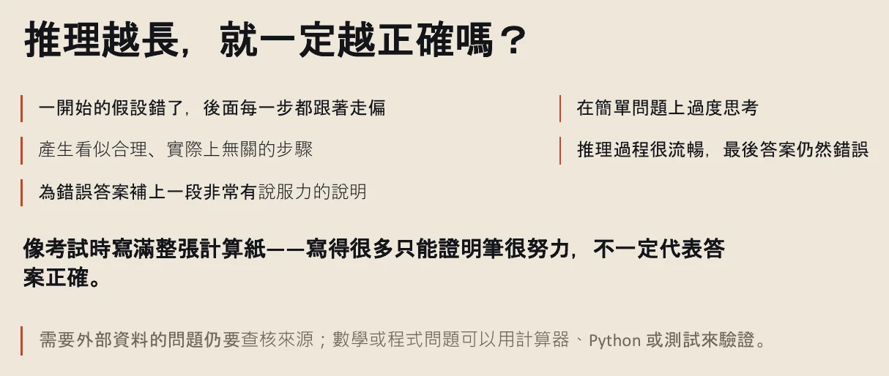
查看完整第 37 頁 ↗
簡單問題反而容易想太多，而「簡單」很難定義。講者舉自己的例子：寫學術文章，對人來說很難，對語言模型來說卻極度簡單。只是要把一篇英文文章的文法改通順，他都開最低的思考程度；開到最高，模型會 overthinking，給出非常複雜、辭藻華麗的結構，寫出來連他自己都看不太懂——但學術文章其實只需要相對簡單、邏輯通順的英文。
所以推理需要多方檢核：要知道 AI 的查證來源，也可以用不同模型交叉測試，因為一個模型不一定是對的。可見的推理，不等於真正的透明。
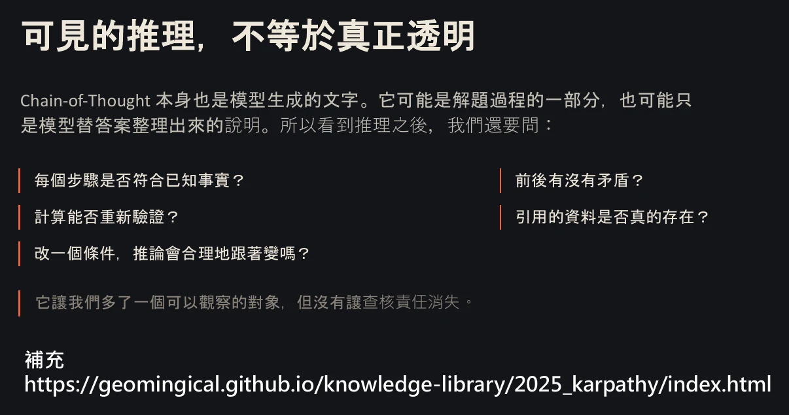
查看完整第 38 頁 ↗
讀完試著說說看 · 整理者練習你能用自己的話，把「GPT-1 到推理模型」這條路串起來嗎？
可以這樣串：GPT-1 先用大量無標籤文字預訓練，再用有標籤的資料微調；GPT-2 放大模型與資料，出現了 Zero-shot；GPT-3 再放大，讓我們能直接在 Context 裡給指令和範例（In-context Learning），任務於是從訓練流程移到了我們手上。Scaling Law 描述放大的好處與界線，重心因此轉向後訓練與推論時的計算；Chain-of-Thought 先是一種問法，後來透過 SFT、RL、RLHF 被訓練進模型，成為推理模型。
但一路走來，模型仍然在預測下一個 Token。推理寫得再長，也可能從錯的假設出發；看得到過程，不代表可以省掉查核。
下課前，講者補充兩份延伸資料：一是上週 Grok 團隊三天直播的完整紀錄，內容很細；二是想更完整理解 LLM 的人，可以看 Andrej Karpathy 去年錄的三個半小時影片，他把它整理成有標題與導讀的文字版。講者笑說，這也可以順便測試自己的專注力有沒有被短影音影響——如果能沉下心一次看完，代表注意力還蠻集中的。
核對這一段的逐字稿 · 01:08:38–01:14:20 · 2 個小標
以下取自本週整理逐字稿：語音辨識後補上標點、改正明顯誤辨的專有名詞，無法確定處以〔〕標記；不是人工逐秒校稿。時間連到 YouTube 直播，正文的銜接與練習不包含在此。
01:08:38｜推理越長越正確嗎？
01:08:38 ↗
〔句首辨識不完整〕……所以這個就會回到我們之後的 Prompt Engineering。所以回過頭來呢，你應該會直接看到說，它猜的哪一些步驟，然後它怎麼樣去做推理的。如果在它訓練的資料裡面沒有類似的東西的話，那模型再怎麼推理，也不見得會有答案。
01:09:08 ↗
〔除非把資料帶〕進來重新去做推理，所以這個就回到後面我們會提到的，像 RAG〔原辨識：Rank〕的這個東西。所以推理的越長就一定越正確嗎？不會。就你剛剛看到千問〔原辨識：Cream〕剛剛整個失控〔原辨識：Key 笑〕，它根本也不知道它在說什麼。所以一開始的假設如果是錯的，後面每一步其實都是錯的，這就回到我們上禮拜說的
01:09:38 ↗
next token prediction 的概念：因為它本來就是一個 token、一個 token 不斷的 print 出來之後，那個 token 再接回到 input，再產生下一個 token。所以在最前面的 token，它如果那個機率滾到一個很壞的字的時候，它在後面原則上就會開始接錯〔原辨識：接觸〕。所以內心戲的部分其實完全一樣，
01:10:08 ↗
只是它們在模型出廠的過程當中，會設定一段內心戲的過程。這個過程其實完全是遵照 Transformer 的 next token prediction，它還是一個字、一個字的輸出。等到模型覺得「我的 thinking 是 done 了」之後，它就會回過頭來去整理它 thinking 這段過程的文字，
01:10:38 ↗
告訴使用者說我的想法是如何。所以在簡單的問題，有可能容易過度思考。簡單的問題非常難定義：假設你要寫一篇學術文章的話，這種文字的撰寫，我們的想像是非常難的，但對語言模型來說，這個是簡單問題，而且極度簡單。所以如果你要去改寫一篇英文文章的〔文法〕，
01:11:08 ↗
你要讓它文法合理的話，我自己都開最低的那個程度就可以解決。你如果開到最高呢，它會 overthinking。所以 overthinking 呢，它有可能會針對你的文字，給予非常複雜、辭藻華麗〔原辨識：遲早華麗〕的結構。我之前試過非常多次，就是寫出來的連我自己都有點看不太懂，因為有時候學術文章其實就是相對簡單的英文，邏輯通順〔就好〕。
01:11:38 ↗
它就會 overthinking，所以有時候產生會看似合理，但實際是完全沒有關係的，這個剛才各位也都看到了。所以推理這個東西，就是要多方的去檢核，你必須要知道 AI 的查證的來源。當然你也可以用不同的模型做交叉的測試，因為不見得一個模型〔就是對的〕。
01:12:08｜延伸資料與下課
01:12:08 ↗
所以當然，可見的推理不等於真正的透明。所以這邊有一個東西需要補充一下：這邊是上禮拜 Grok 的活動，我是有把三天的紀錄全部放在這，這個很細，這個可能會看不完。
01:12:38 ↗
如果有興趣的人可以自己去看。針對這兩堂課，如果你覺得你想更完全的去理解 LLM 的話，你可以看這一份檔案。這份檔案它是很有名的 Andrej Karpathy〔原辨識：NG KABATO〕，他在去年所錄的影片，這影片有三個半小時，非常非常長，那我把它轉成有點像一個主要的文字，就是一個 title
01:13:08 ↗
然後文字的導讀〔原辨識：導度〕。所以這個也可以順便測試一下，各位自己的腦袋有沒有受短影音〔原辨識：端隱隱〕所污染，因為這個不是一般人一天一次可以看得完的。如果你可以沉下心來一次把內容看完的話，就代表說你的腦袋其實沒有受短影音所污染，你的注意力的集中程度還蠻高的。
01:13:38 ↗
今天大概就到這邊，我們今天從 GPT-1 到 GPT-3，然後也拆解了 Reasoning 的這個 model。所以如果你覺得內容有用的話，你可以一樣 Buy Me a Coffee，但它需要用街口支付〔原辨識：接口支付〕去掃描它。好，所以有人有想要討論什麼問題嗎？還是沒有？
01:14:08 ↗
到這邊結束囉，好，謝謝各位。〔聽眾：〕謝謝阿明，感謝。
來源與閱讀說明
本筆記依 Week 2 直播的逐字稿順序整理，涵蓋 YouTube 直播 06:08 至結尾（01:14:20）。直播開始前的片頭音樂未納入。完整內容請回到影片或逐字稿。
時間與連結：逐字稿由本機錄影辨識而來。本機錄影比 YouTube 直播早 4 分 52 秒開始，所以頁面上的時間都已換算成 YouTube 時間。換算依據是兩個檔案的長度差，並用五個可辨認的片段（回顧、Transformer、stage 2、Zero-shot、Sakana）交叉比對。逐字稿段落時間是每段約 30 秒的起點，不是逐句對時；誤差大約數秒。
逐字稿：原始逐字稿有數段辨識失敗，包括重複迴圈、把背景音樂辨識成歌詞、句子被截斷等，約佔十幾分鐘。這些段落已用另一個辨識模型重新處理補上。整理時補了標點；明顯誤辨的專有名詞已改正並以〔原辨識：…〕標示，例如 GBT→GPT、train of soul→Chain of Thought。仍無法確定的地方以〔…〕或「待核」標記，全文未經人工逐秒校稿。
正文依來源重寫，銜接句、追問與練習由整理者新增，並非直播中的示範。課中的新聞、產品方案、模型比較、IQ 分數與「模型變笨」的原因，都保留課堂當時的語境與講者觀點；本筆記未逐項查核，也不當成已驗證的現況。外部技術補充另以「整理者補充」或「閱讀界線」標示。
投影片：26 張 PDF 裁圖保留原內容，只裁去頁首、頁尾與 QR code；各圖都可放大，或開啟完整原頁。封面、三張章節頁，以及第 6、11、17、23、25、28、29、31、39 頁沒有單獨成圖，內容併入正文。其中第 23、29 頁的 notebook 程式碼，以及第 28、31 頁的部分說明，影片中沒有逐頁講解；正文引用時已標明出自投影片。原圖內的重字或排版問題可能存在。
可選取文字留下評論，再預覽與複製回饋。評論只保存在目前瀏覽器，不會自動傳送。樣式沿用 Week 1 課程筆記；html-visualizer 第三方聲明。